Motivation：为什么要做数据选择
Slide 5–12 · 制造便宜了，选择成了瓶颈
Slide 5 章节页：动机（Motivation）
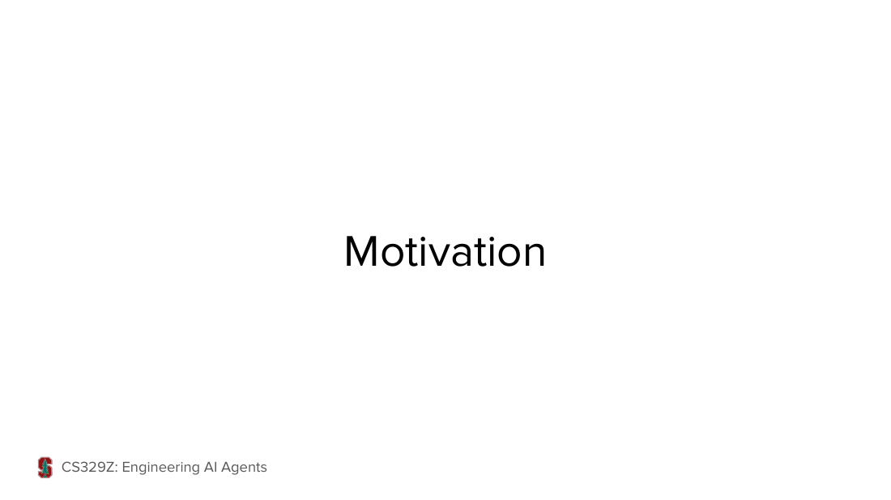
章节过渡页，仅中央大字「Motivation」。
进入第一节：动机。上一讲结束时，「数据从哪里来」似乎已经有了答案——挖、合成、模拟，条条大路通大规模。但把候选数据摊开一看就会发现：里面混着坏的、无用的、重复的。这一节用 10 分钟立起本讲的核心判断：瓶颈已经从「制造」转移到「筛选」 ，并用 CWM 的去重决策、OT-Agent 的对照实验、LIMI 与 Orchard 的路线之争三组证据来支撑它。
Slide 6 制造已便宜，筛选是难事
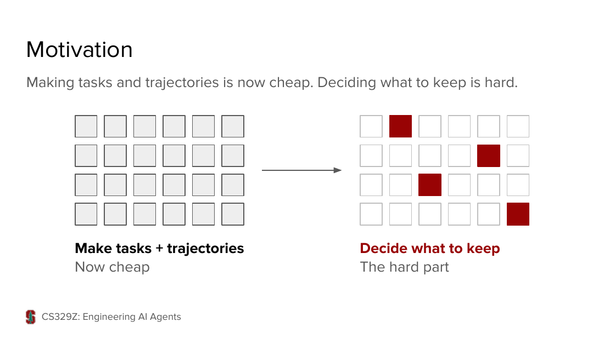
左右对比：左栏「Make tasks + trajectories（制造任务与轨迹）」标注 Now cheap（如今已便宜）；右栏「Decide what to keep（决定留下什么）」标注 The hard part（真正的难事）。
本讲的立场页。上一讲展示的所有造数据手段——人类演示、挖掘、合成、模拟——把「制造任务与轨迹」的成本打到了地板上。但训练不是把数据全倒进去：候选池里混着损坏的验证器、学不到东西的题、成千上万条雷同的轨迹。「决定留下什么」成了新的、也是更难的工程问题 。这个判断决定了本讲的叙事结构：后面三节分别回答「留哪些任务」「留哪些轨迹」「留多少、怎么平衡规模与质量」。
Slide 7 开场案例：CWM 的 300 万条轨迹与两个筛选决策
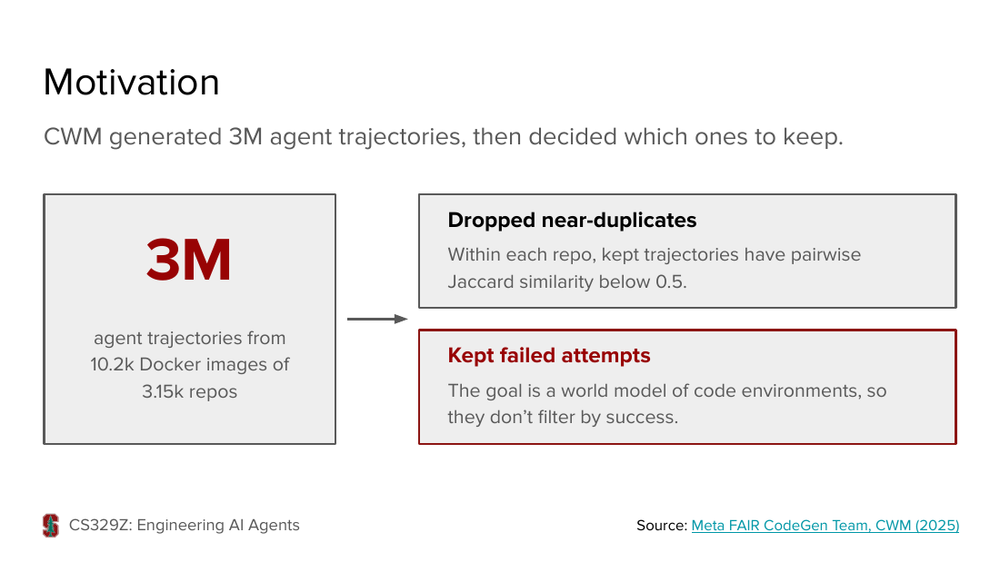
左框大字「3M」——来自 3.15k 个仓库的 10.2k 个 Docker 镜像的 300 万条智能体轨迹；右侧两个决策框：「Dropped near-duplicates（丢弃近重复）——每个仓库内保留轨迹两两 Jaccard 相似度低于 0.5」「Kept failed attempts（保留失败尝试）——目标是代码环境的 world model，所以不按成功与否过滤」。出处：Meta FAIR CodeGen Team, CWM (2025)。
开场案例是 Meta FAIR 的 CWM （2025）：他们生成了 300 万条智能体轨迹 ，原料是 3,150 个仓库搭建出的 10,200 个 Docker 镜像 ——制造规模已不稀奇，稀奇的是随后的两个筛选决策。其一，丢弃近重复 ：在每个仓库内部，保留的轨迹两两 Jaccard 相似度 （衡量两条序列重叠程度的指标）必须低于 0.5 ——300 万条里大量是同一道题的雷同解法，全留只会浪费训练预算。其二，保留失败尝试 ：因为 CWM 的目标是让模型学会代码环境的「世界模型」（world model，即环境如何响应动作的内在规律），失败轨迹同样蕴含环境规律，所以他们不按成功与否过滤 。「去重但不去败」是一种鲜明的水数据哲学，后文 NAT 一节会再次呼应「失败也有价值」。
Slide 8 漏斗图：流水线每一环都在扔数据
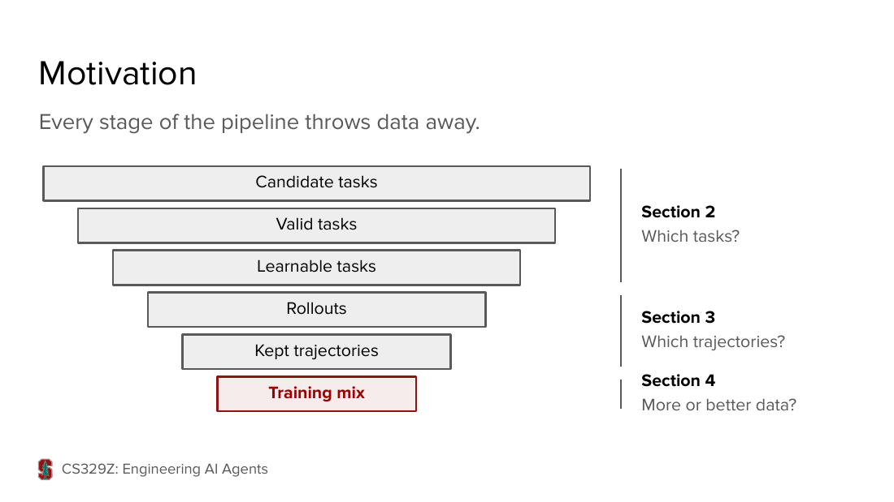
六层漏斗自上而下收窄：Candidate tasks（候选任务）→ Valid tasks（有效任务）→ Learnable tasks（可学习任务）→ Rollouts（多次尝试）→ Kept trajectories（保留轨迹）→ Training mix（训练组合，红色高亮）；右侧标注三个环节分别对应 Section 2（Which tasks?）、Section 3（Which trajectories?）、Section 4（More or better data?）。
这张漏斗图是全讲的地图。候选任务 经过「跑一遍验证」筛成有效任务 ，再经过「难度适中」筛成可学习任务 ——这两层是第二节（哪些任务）的内容；在可学习任务上做多次尝试（rollouts） ，从产生的大量轨迹里挑出保留轨迹 ——这是第三节（哪些轨迹）的内容；最后把不同来源的数据配成训练组合 ——这是第四节（更多还是更好）的内容。要点在于：流水线的每一环都在扔数据 ，而且扔掉的往往比留下的多得多——比如后面会看到的 SWE-bench Verified（68.3% 被过滤）和 LEGO-RL（36,884 条候选最后只剩 2,699 条）。数据选择的本质就是设计这条漏斗。
Slide 9 我们选的是两样东西：SFT 用轨迹，RL 用环境
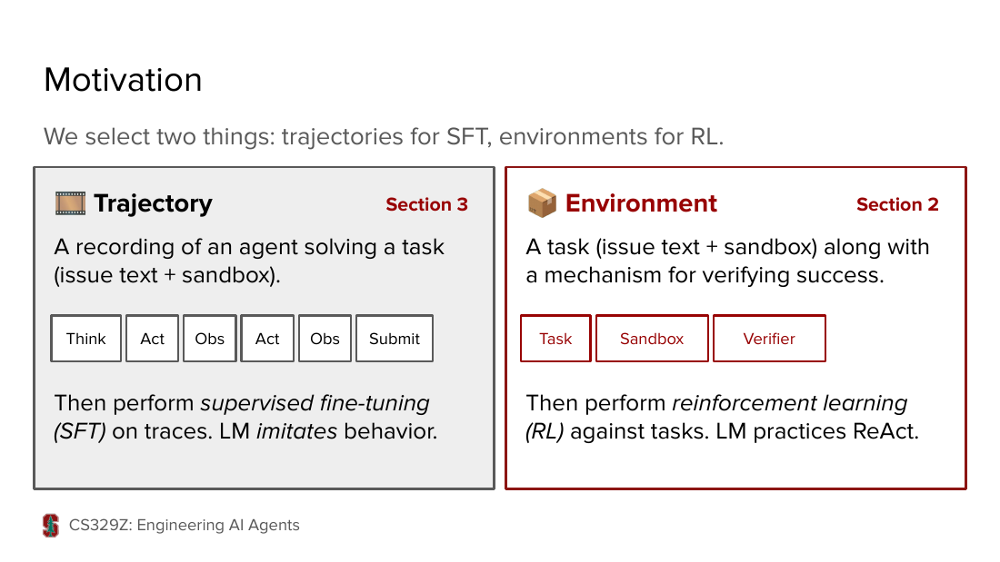
左框「🎞 Trajectory（轨迹，对应 Section 3）」：一段智能体解题的录像（issue 文本 + sandbox），链条 Think → Act → Obs → Act → Obs → Submit，之后对轨迹做监督微调（SFT），语言模型模仿行为；右框「📦 Environment（环境，对应 Section 2）」：任务（issue 文本 + sandbox）外加验证成功的机制（Task + Sandbox + Verifier），之后做强化学习（RL），模型练习 ReAct。
数据选择选什么？两样东西，对应两种训练范式。轨迹（Trajectory） ：智能体解一道题的完整录像——issue 文本加上沙箱（sandbox）环境，过程是「思考（Think）→ 行动（Act）→ 观察（Obs）→ … → 提交（Submit）」的循环；对轨迹做监督微调（SFT，Supervised Fine-Tuning，用示范数据直接模仿训练） ，模型照着优秀行为学。环境（Environment） ：一个任务（issue 文本 + 沙箱）外加一套验证成功的机制（Verifier） ；对环境做强化学习（RL，Reinforcement Learning，靠奖励信号试错学习） ，模型在反复练习中自己练出 ReAct（推理 + 行动交替）能力。注意幻灯片上的标注：环境对应第二节，轨迹对应第三节——同一份 issue + sandbox，配上验证器就是 RL 的环境，配上解题录像就是 SFT 的轨迹。
Slide 10 训练数据变坏的三种方式
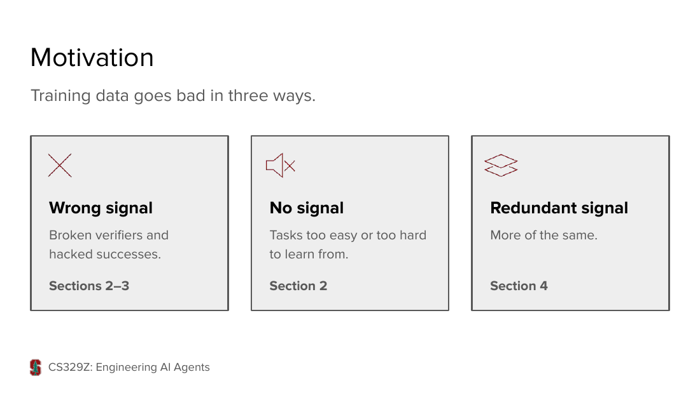
三栏卡片：Wrong signal（错误信号） ——损坏的验证器与被作弊的成功，对应 Sections 2–3；No signal（无信号） ——任务太容易或太难，学不到东西，对应 Section 2；Redundant signal（冗余信号） ——更多的一模一样，对应 Section 4。
训练数据变坏有三种典型方式，本讲三节各自对付一种。错误信号（Wrong signal） ：验证器本身是坏的，或者智能体靠作弊（hacked successes）通过验证——模型得到的奖励在教它错的东西，这是第二、三节（Sections 2–3）要审计的对象，典型如 SWE-bench Verified 的不公平测试与 Verification Horizon 的七种捷径。无信号（No signal） ：任务太容易或太难，模型从中学不到东西，这是第二节（Section 2）难度筛选要解决的，典型如 DAPO 的全对提示与 LEGO-RL 的 1–3/4 保留带。冗余信号（Redundant signal） ：「更多的一模一样」不是更多，这是第四节（Section 4）要讨论的，典型如 CWM 的 Jaccard 去重与 Orchard 的多样性实验。记住这三类，后面每个案例都能对号入座。
Slide 11 证据：同样的底座，后训练数据决定成败（OT-Agent）
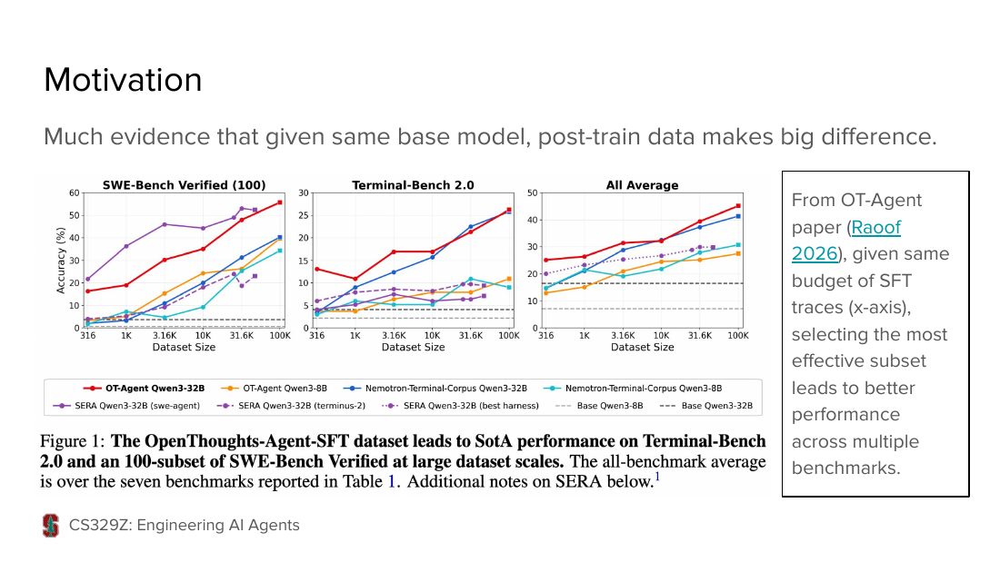
OT-Agent（Raoof 2026）论文 Figure 1 三联折线图：左「SWE-Bench Verified (100)」（纵轴 Accuracy %，0–60）、中「Terminal-Bench 2.0」（0–30）、右「All Average」（七基准平均，0–50），横轴均为 Dataset Size（316、1K、3.16K、10K、31.6K、100K）。曲线包括 OT-Agent Qwen3-32B（红色，一路领先）、OT-Agent Qwen3-8B、Nemotron-Terminal-Corpus Qwen3-32B/8B、SERA Qwen3-32B 各变体（紫色虚线），以及 Base Qwen3-8B / Base Qwen3-32B 水平虚线基线。
为什么数据选择值得专门讲？因为大量证据表明：底座模型相同的前提下，后训练数据的差异会造成天壤之别 。幻灯片引用 OT-Agent 论文（Raoof, 2026）的实验：横轴是喂给 SFT 的轨迹预算（316 条到 100K 条），同一预算下对比不同数据来源——OT-Agent 自家的精选数据（红线）、Nemotron-Terminal-Corpus、SERA 各变体——在 SWE-Bench Verified 100 题子集、Terminal-Bench 2.0 和七基准平均（All Average）三个面板分别画曲线。结论清晰：同样的轨迹预算，选出最有效的子集就能在多个基准上全面领先 ，且预算越大领先越明显；而底座基线（虚线）不随数据量移动。数据不是越多越好——「喂什么」和「喂多少」同样重要，这正是本讲全部方法论的存在理由。
Slide 12 开放争论：少即是多，还是多即是多？
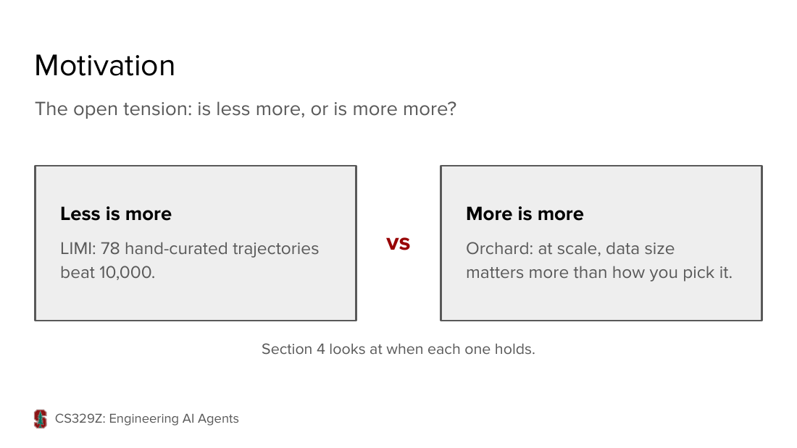
左右两框中间夹着红色「VS」：左框「Less is more——LIMI：78 条手工精选轨迹击败了 10,000 条」；右框「More is more——Orchard：规模化场景下，数据量比挑选方式更重要」。下方注：Section 4 会讨论各自成立的条件。
数据选择领域有一场至今未决的争论，幻灯片把它摆成对峙的两框。「少即是多」（Less is more）阵营 的证据是 LIMI：仅 78 条手工精选轨迹 训出的智能体，击败了用 10,000 条 训练的模型。「多即是多」（More is more）阵营 的证据是 Orchard：当规模上去之后，数据量比挑选策略更重要 ——随便选一大把，胜过精挑一小撮。两个结论看似矛盾，其实各有成立条件，第四节会正面拆解（剧透：关键变量是候选池的总量——池子小的时候精选赢，池子大的时候规模赢）。本讲前两节先把「怎么挑」的工具箱配齐，第四节再回答「什么时候值得挑」。
哪些任务值得训练？（Section 2）
Slide 13–34 · Which tasks are worth training on?
Slide 13 章节页：哪些任务值得训练？
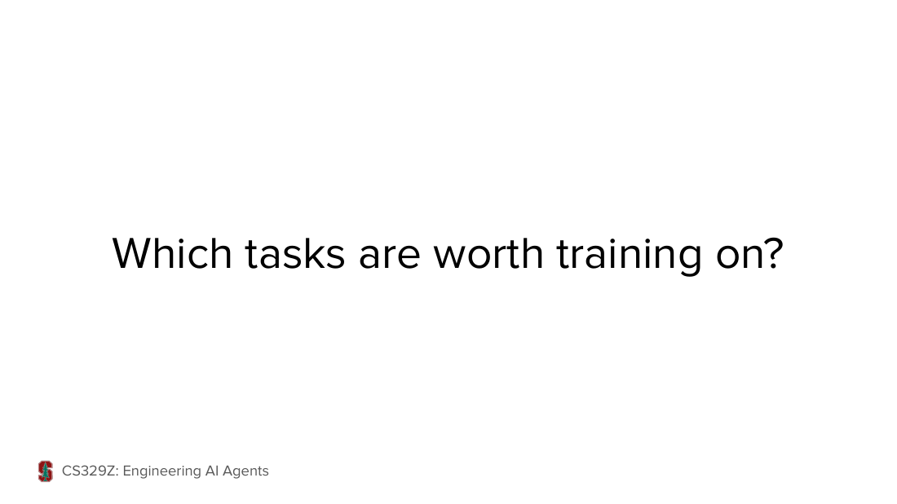
章节过渡页，仅中央大字「Which tasks are worth training on?」。
进入第二节（25 分钟，本讲最长）：哪些任务值得训练。这一节回答的是漏斗上半段——从候选任务到可学习任务的两层筛选。案例依次是：SWE-bench Verified （人工审核基准任务）、APIGen 与 CodeMidas （自动化验证任务有效性）、DAPO 与 LEGO-RL （按难度保留「模型有时能解」的任务）、WebRL （随模型进步动态重选题）。四组案例拼成一条完整的任务筛选流水线。
Slide 14 任务筛选的四步循环
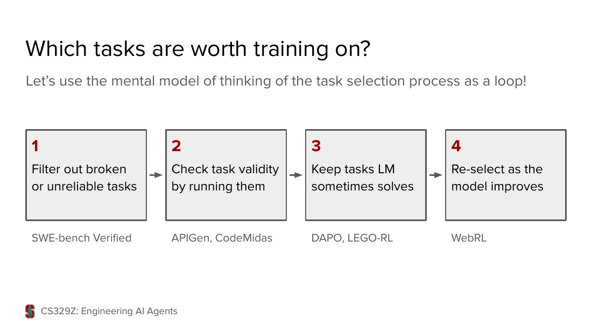
四个编号步骤：① Filter out broken or unreliable tasks（过滤损坏或不可靠的任务）→ SWE-bench Verified；② Check task validity by running them（运行任务以检查有效性）→ APIGen、CodeMidas；③ Keep tasks LM sometimes solves（保留语言模型有时能解出的任务）→ DAPO、LEGO-RL；④ Re-select as the model improves（随模型进步重新筛选）→ WebRL。
本节的总纲：把任务选择看成一个循环 ，而非一次性过滤。四步分别是：第一步，过滤损坏或不可靠的任务 ——问题陈述说不清、测试判不公平的题先踢掉，代表工作是 SWE-bench Verified 的人工审核；第二步，运行任务来验证有效性 ——光看题面不够，要真跑一遍确认「修复前测试挂、修复后测试过」，代表工作是 APIGen 和 CodeMidas 的自动化验证；第三步，保留模型有时能解的任务 ——全对全错的题都没有学习信号，代表工作是 DAPO 的动态采样与 LEGO-RL 的难度筛选；第四步，随模型进步重新筛选 ——今天的难题明天就变简单题，任务池必须滚动更新，代表工作是 WebRL 的自进化课程。每一步都有对应论文背书，下面逐一展开。
Slide 15 SWE-bench Verified：一个坏任务的解剖（sklearn-14520）
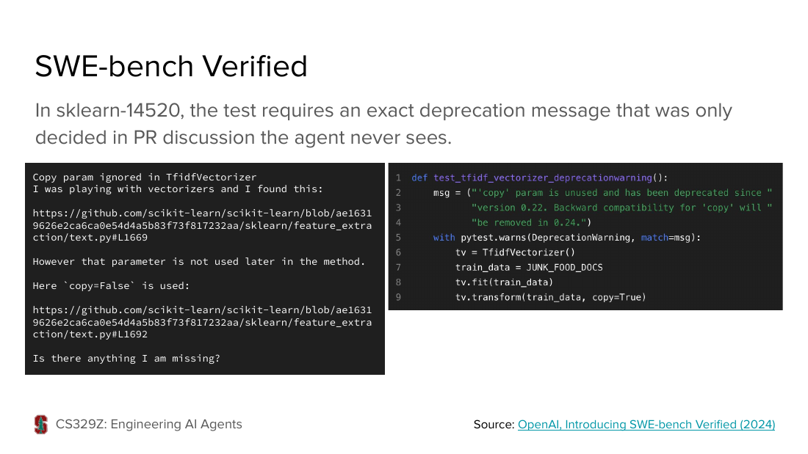
真实 issue 截图「Copy param ignored in TfidfVectorizer」：报告者发现 scikit-learn 中 TfidfVectorizer 的 copy 参数在方法后段并未被使用（附两处源码 GitHub 链接），问道「我是不是漏了什么？」。出处：OpenAI, Introducing SWE-bench Verified (2024)。
第一步「过滤坏任务」的开场案例，是 SWE-bench 里的真实坏任务 sklearn-14520。issue 本身很干净：用户报告 TfidfVectorizer 的 copy 参数没有被使用，还贴了两处源码链接。问题出在它的测试 上：测试要求精确匹配一段弃用警告（deprecation message）的原文 ——而这段提示词的具体措辞，是在智能体永远看不到的 PR 讨论 里才拍板的。也就是说，一个逻辑上完全正确的修复，会因为警告文案差一个标点而判失败。这个例子点出坏任务的两种典型病灶：问题描述不充分 （underspecified）与测试不公平 （unfair）——它们不会让任务变得「更难」，只会让任务变得「不可判」。下一页看 OpenAI 怎么系统地清理这类问题。
Slide 16 SWE-bench Verified：93 位开发者的人工审核
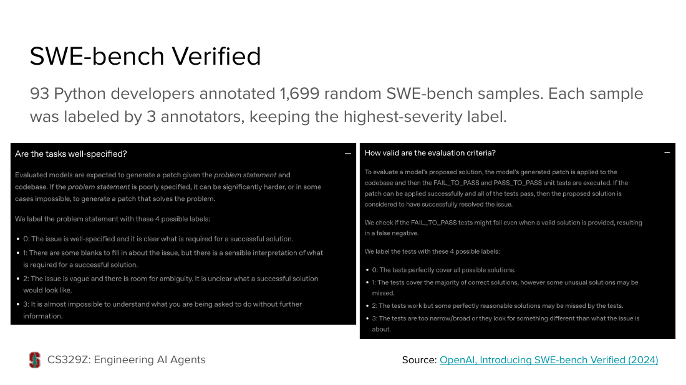
审核流程：93 位 Python 开发者标注了 1,699 个随机抽取的 SWE-bench 样本；每个样本由 3 位标注者独立打标，保留最严重（highest-severity）的标签。下方两张标注界面卡片：左「问题陈述是否充分指定？」——0 级（完全清晰）到 3 级（不看更多信息几乎无法理解）四档；右「评估标准有多有效？」——检查 FAIL_TO_PASS / PASS_TO_PASS 测试是否会在正确解上误判（假阴性），同样 0–3 四档。出处：OpenAI (2024)。
OpenAI 在 2024 年发布 SWE-bench Verified，做法是纯人工的：93 位 Python 开发者 对从 SWE-bench 随机抽取的 1,699 个样本 逐一审核；每个样本由 3 位标注者 独立打标，取最严重的标签 （只要有一人认为测试不公平，就按不公平算——宁可错杀）。审核看两个维度，幻灯片给出了标注界面截图：「问题陈述是否充分指定？」 ——从 0 级（issue 完全清晰、成功解所需一目了然）到 3 级（不看额外信息几乎无法理解）四档；「评估标准有多有效？」 ——检查 FAIL_TO_PASS / PASS_TO_PASS 测试（修复后必须通过 / 修复前后都必须通过的测试）会不会在给出正确解的情况下依然失败 （假阴性），同样四档。这套流程的产出，就是下一页的统计数据。
Slide 17 SWE-bench Verified：三分之二的任务有问题
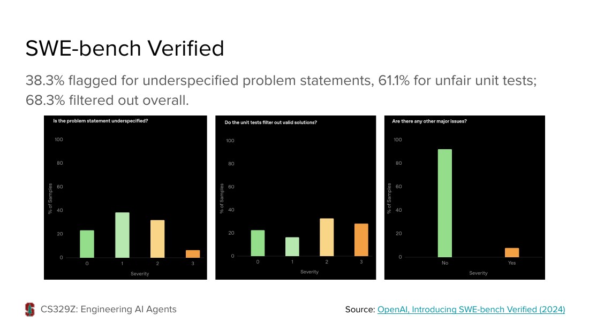
统计结果：38.3% 的样本因问题陈述不充分（underspecified problem statements）被标记；61.1% 因单元测试不公平（unfair unit tests）被标记；总体 68.3% 被过滤掉。出处：OpenAI (2024)。
人工审核的结论触目惊心：38.3% 的样本被标记为「问题陈述不充分」，61.1% 被标记为「单元测试不公平」（两者有重叠），合计 68.3% 的任务被过滤——原版 SWE-bench 里三分之二的题都有「不可判」的问题。两个数字给所有做智能体数据的人上了一课：不要高估「现成数据」的质量 。这些任务都来自真实 GitHub issue + 真实 PR，看起来天然可靠，但「真实」不等于「可验证」：issue 写给人类同事看，默认了大量共享上下文；测试是提交者顺手写的，没人保证它对每个正确解都友好。验证器坏了，RL 的奖励就是错的——这正是「错误信号」类坏数据的典型来源。
Slide 18 SWE-bench Verified：坏任务掩盖真实能力
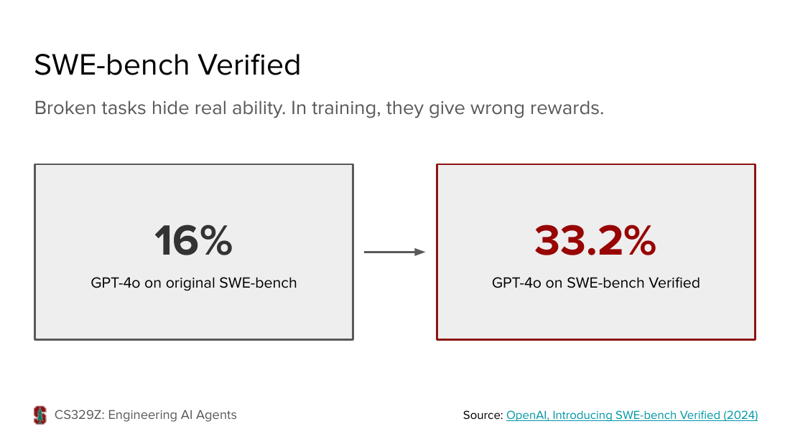
左右两个大数字框加箭头：左框「16%——GPT-4o on original SWE-bench」（灰色边框）；右框「33.2%——GPT-4o on SWE-bench Verified」（红色边框）。出处：OpenAI (2024)。
过滤坏任务的收益立竿见影：同一个 GPT-4o，在原版 SWE-bench 上解决率只有 16% ，在清洗后的 SWE-bench Verified 上跳到 33.2% ——翻了一倍多。模型没变，变的只是考卷。这组数字有两层含义：其一（评估视角） ，坏任务在掩盖真实能力——大量「失败」其实是任务烂而不是模型差，用脏基准做评测会系统性低估模型；其二（训练视角，本讲更强调的） ，坏任务在训练中给出错误奖励 ——如果拿原版 SWE-bench 做 RL，模型会被反复奖励那些「钻了不公平测试空子」的解法，学歪的方向被固化。评测集要清洗，训练集更要是清洗后的子集——「清洗」这个动作在评测和训练两边都是双赢的。
Slide 19 APIGen：把人工审核自动化成三道关卡
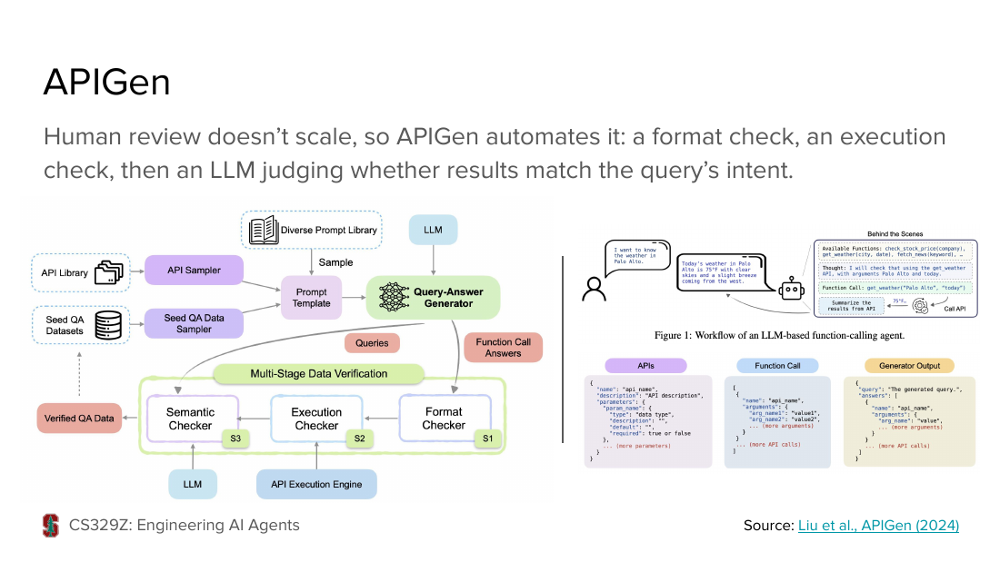
APIGen 的自动化三关卡：① 格式检查（format check）；② 执行检查（execution check）；③ LLM 判断（LLM judging）——判定返回结果是否与查询意图相符。出处：Liu et al., APIGen (2024)。
SWE-bench Verified 证明了人工审核有效，但人工审核不规模化 ——93 位开发者审 1,699 个样本，放到百万级任务池上就是天价。APIGen （Liu et al., 2024）的答案是把这个流程自动化成三道递进的关卡：① 格式检查 ——任务的参数、签名是否符合 API 规范，最便宜的筛子先上；② 执行检查 ——真的调用执行一遍，确认任务能跑通；③ LLM 判断 ——让一个语言模型读「用户查询 + 执行结果」，判断结果是否真正回应了查询的意图 ——这是前两道机械检查覆盖不到的语义层。三关全过才入库。这个「先机械后语义、层层加码」的漏斗设计，是所有自动化数据审核的通用模板；下一组案例 CodeMidas 会把它推到更严苛的形态。
Slide 20 CodeMidas：只从源码造 RL 环境
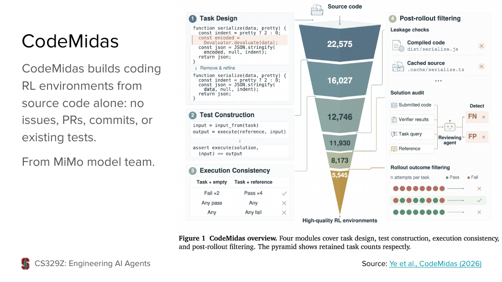
CodeMidas 简介：从源代码单独 （source code alone）构建代码 RL 环境——不使用 issue、PR、commit 或已有测试（no issues, PRs, commits, or existing tests）。来自 MiMo 模型团队。出处：Ye et al., CodeMidas (2026)。
CodeMidas （Ye et al., 2026，来自 MiMo 模型团队）把「验证任务有效性」推向了更极端的设定：它构建代码 RL 环境只看源代码本身 ——没有 issue（不依赖有人报过 bug）、没有 PR（不依赖有人修过）、没有 commit 历史、甚至连仓库里已有的测试都不用。为什么这么做？因为「issue + PR」的原料是稀缺的，而源码是无限的；放弃这些拐杖，意味着任务和验证器都要自己造，也意味着「验证任务有效性」必须完全自动化、且比以往更严格——毕竟没有 PR 讨论可以参考对错。接下来三页看它怎么解决两个核心问题：测试该多严 ，以及怎么自动确认任务有效 。
Slide 21 CodeMidas：测试应该接受任何正确解
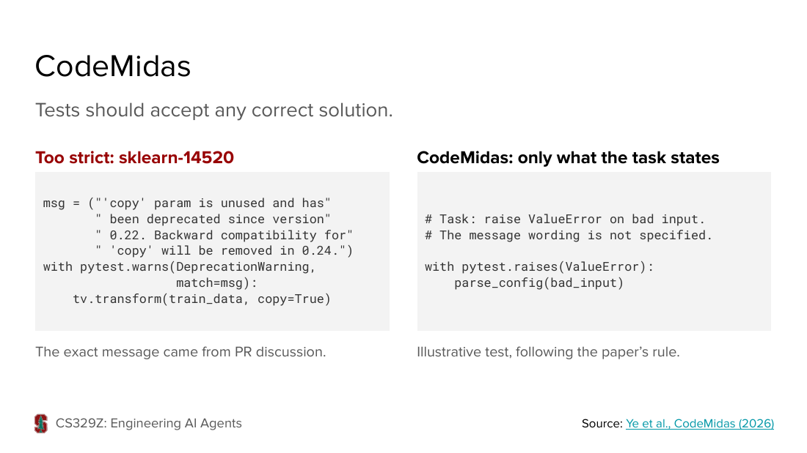
上下对比。「Too strict: sklearn-14520（过严的反例）」：测试用 pytest.warns(DeprecationWarning, match=msg) 精确匹配一段弃用消息原文——「这条精确消息来自 PR 讨论」；下方「CodeMidas: only what the task states（CodeMidas 的原则，示意性测试，遵循论文规则）」：with pytest.raises(ValueError): parse_config(bad_input)，注释写明「任务只要求对坏输入抛 ValueError，消息措辞未指定」。出处：Ye et al., CodeMidas (2026)。
这一页给出 CodeMidas 的核心设计原则：测试应该接受任何正确的解 （Tests should accept any correct solution）。上半是反例——正是第 15 页那个 sklearn-14520：测试用 pytest.warns 加 match=msg 精确匹配弃用警告的原文措辞，而这段措辞只有读过 PR 讨论才知道——过严的测试把所有「行为正确但文案不同」的解全判死。下半是 CodeMidas 的写法（示意性测试）：任务说「对坏输入抛 ValueError」，测试就只断言 pytest.raises(ValueError)，注释里明确写「消息的具体措辞未指定」——只检查任务陈述过的行为，不检查任务没陈述的细节 。这条原则是生成验证器时的护栏：验证器越贴近题面、越少夹带出题人的私货，正确解的空间就越大，RL 的奖励也就越公平。
Slide 22 CodeMidas：每个任务在六个全新容器里验证
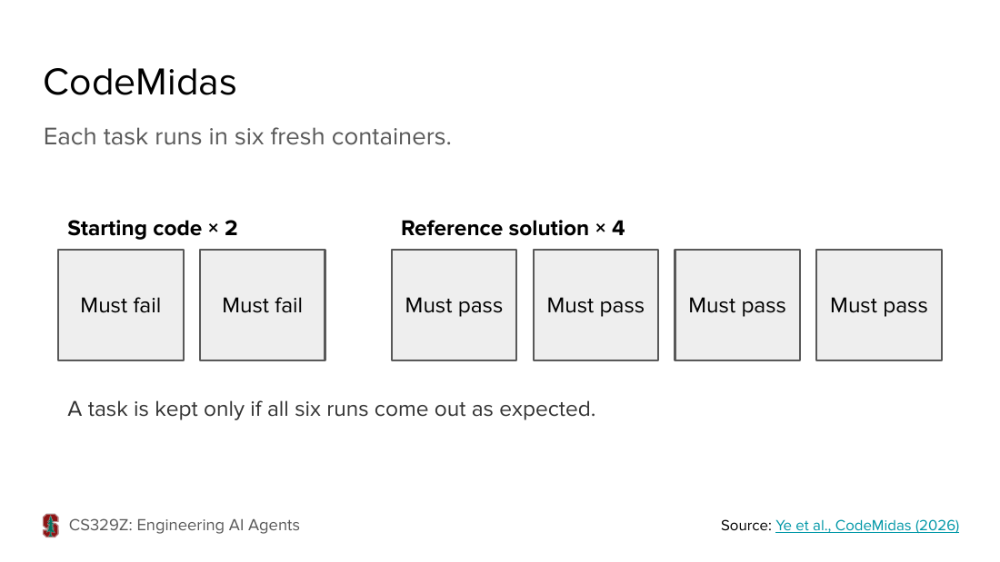
验证布局：左侧「Starting code × 2（起始代码跑两遍）」——两个容器都标「Must fail（必须失败）」；右侧「Reference solution × 4（参考解跑四遍）」——四个容器都标「Must pass（必须通过）」。底部规则：只有六次运行全部符合预期，任务才被保留。出处：Ye et al., CodeMidas (2026)。
CodeMidas 验证任务有效性的方法是朴素而可靠的：每个任务在六个全新的容器（fresh containers）里实跑 。左边两个容器装入起始代码 （未修复的原始状态），要求测试必须失败 ——确认这个任务「确实有病」；右边四个容器装入参考解 （reference solution），要求测试必须通过 ——确认测试「治得了病」。为什么是 2 + 4 多次重复？因为测试可能不稳定 （flaky）：依赖随机种子、网络、时序的测试时过时挂，单次运行会漏检；六个独立容器全部符合预期（2 挂 4 过），才说明「修复前挂、修复后过」这个因果是稳定的。只有全部符合预期，任务才被保留。这一步对应四步循环里的「跑一遍验证」——只不过 CodeMidas 跑了六遍。
Slide 23 CodeMidas：rollout 之后还有三道过滤器
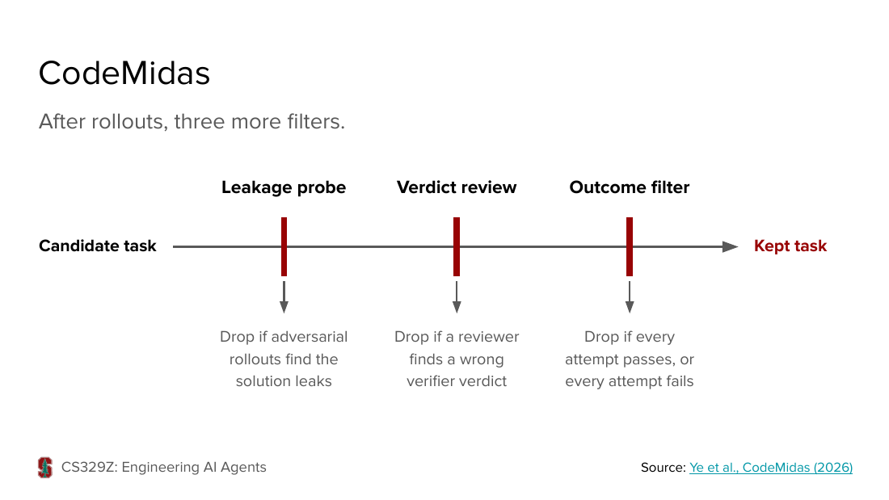
流水线图：候选任务（Candidate task）→ 保留任务（Kept task），中间三道过滤器：Leakage probe（泄漏探针） ——若对抗性 rollouts 发现解答泄漏则丢弃；Verdict review（裁决复审） ——若复审者发现验证器给出错误裁决则丢弃；Outcome filter（结果过滤器） ——若所有尝试全过或全挂则丢弃。出处：Ye et al., CodeMidas (2026)。
六容器验证只是「任务出厂质检」；在真实 rollouts（让模型试做这些任务）之后，CodeMidas 又加了三道过滤器。① 泄漏探针（Leakage probe） ：故意跑对抗性 rollouts ——专门诱导模型去环境里翻答案；一旦发现解答泄漏，说明这个任务在真实环境里能被作弊攻破，丢弃。② 裁决复审（Verdict review） ：让复审者逐一检查验证器的裁决有没有冤假错案——正确解被判挂、错误解被判过——发现错判即丢弃。③ 结果过滤器（Outcome filter） ：如果所有尝试全部通过 （太简单，无信号）或全部失败 （太难，无信号），丢弃——这一条已经悄悄衔接了四步循环的第三步「保留模型有时能解的任务」。三道过滤器的共同精神：任务的质量要用「实际运行的行为」来证明，而不是用「看起来对」来假设 。
Slide 24 CodeMidas：过滤后的 3k 就能打赢未过滤的 8k
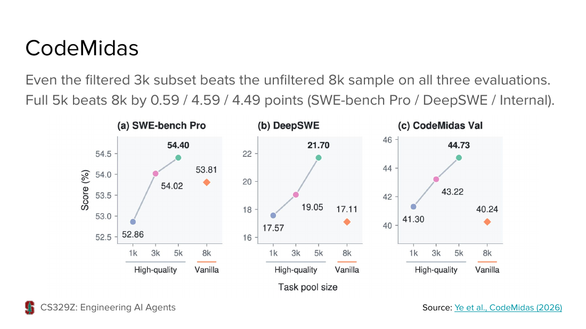
三联图，横轴为任务池规模（1k / 3k / 5k 为 High-quality 高质量池，8k 为 Vanilla 未过滤池）：左 (a) SWE-bench Pro——52.86 → 54.02 → 54.40，8k 只有 53.81；中 (b) DeepSWE——17.57 → 19.05 → 21.70，8k 只有 17.11；右 (c) CodeMidas Val——41.30 → 43.22 → 44.73，8k 只有 40.24。出处：Ye et al., CodeMidas (2026)。
CodeMidas 的回报数字。三张子图对应三个评测（SWE-bench Pro、DeepSWE、内部评测 CodeMidas Val），横轴是训练任务数：高质量池按 1k → 3k → 5k 递增，另设一个 8k 的「原味」（Vanilla，未经筛选）对照点。两个结论：第一 ，高质量池 1k → 3k → 5k 在三个评测上都单调上升 ——筛选没有丢掉多样性，数据确实越滚越好；第二（最刺眼的一点） ，仅 3k 的过滤子集就已经在全部三个评测上击败 8k 的未过滤样本 ——任务数少六成以上，成绩反超。全量 5k 相对 8k 的领先幅度是 0.59 / 4.59 / 4.49 分 （SWE-bench Pro / DeepSWE / Internal，对应 54.40 对 53.81、21.70 对 17.11、44.73 对 40.24）。这是「少即是多」阵营的第一份陈述：当候选池里坏任务占比高时，筛掉烂题比堆数量划算得多 。
Slide 25 DAPO：组内相对优势——全对全错都学不到东西
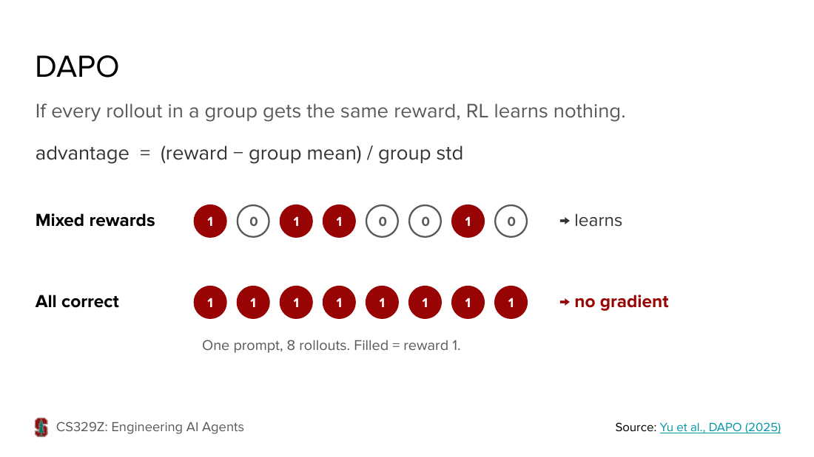
公式：advantage = (reward − group mean) / group std（优势 = 奖励减组内均值再除以组内标准差）。两组对照，每个圆点代表一次 rollout（实心 = 奖励 1，空心 = 奖励 0），一个提示 8 个 rollouts：「Mixed rewards（混合奖励）」组为 1 0 1 1 0 0 1 0 → 标注「→ learns（能学习）」；「All correct（全对）」组为八个实心 → 标注「→ no gradient（无梯度）」。出处：Yu et al., DAPO (2025)。
第三步「保留模型有时能解的任务」的 RL 理论基础来自 DAPO （Yu et al., 2025）。这类 RL 训练用组相对优势 （group-relative advantage）：同一个提示采样一组 rollout，每个 rollout 的优势 = (reward − 组均值) / 组标准差——比组内平均好就正向推，比平均差就负向推。这套机制的软肋就在幻灯片的两组对照里：一个提示 8 个 rollouts，混合奖励组 （1 0 1 1 0 0 1 0）有组内方差，优势有正有负，梯度存在，「能学习」；全对组 （8 个 1）均值等于每个值、标准差为零，所有优势都是零——无梯度 ，这一组 rollout 白跑（全错组同理）。对 RL 而言，「模型有时能解」不是「简单」的同义词，而是「有学习信号」的同义词 ——这为下一页的动态问题埋下伏笔。
Slide 26 DAPO：模型越强，全对提示越多
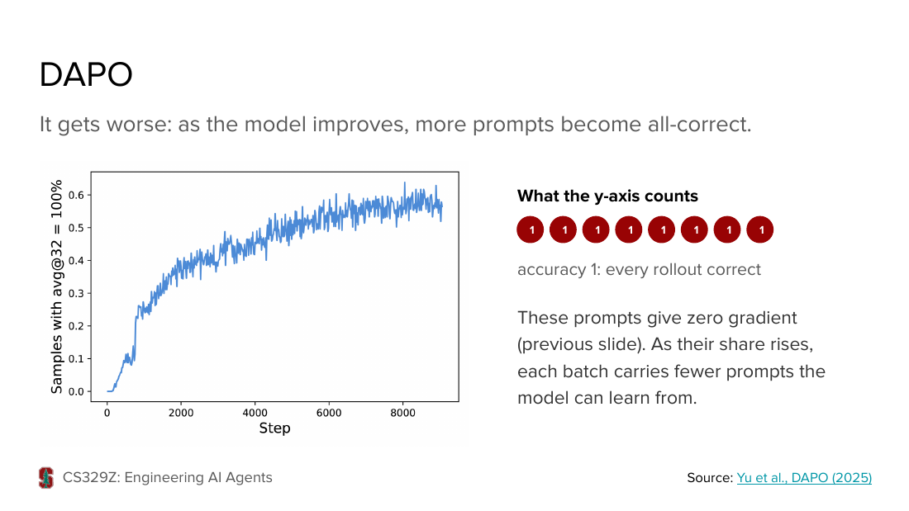
折线图：纵轴「Samples with avg@32 = 100%」（32 次采样平均准确率达到 100% 的样本占比，0–0.6），横轴 Step（0–9000+）。蓝色曲线从接近 0 快速爬升，约 2000 步后超过 0.4，最终在 0.55–0.6 附近波动。右侧注解：纵轴数的正是「accuracy 1 = 每次 rollout 都正确」的那些提示；它们产生零梯度（上一页），随着占比上升，每个 batch 里模型能学到的提示越来越少。出处：Yu et al., DAPO (2025)。
更糟的是，全对无梯度的提示不是静态的，它随训练进程增长 。这张图的纵轴是「avg@32 = 100% 的样本占比」——即那些在 32 次采样下全对的提示；横轴是训练步数。曲线从接近 0 一路爬到约 0.6 ：训练到后期，六成的提示已经是「模型闭着眼都能做对」的题——每批数据里真正携带梯度的提示越来越少，有效 batch 在缩水 ，大量算力浪费在零梯度样本上。这就是第 10 页「无信号（No signal）」坏数据的动态版本：任务没变，是模型进步让任务「变质」了。这个现象也预告了 LEGO-RL 的「任务池过期」问题（第 31 页）。
Slide 27 DAPO：动态采样——凑满一批混合奖励再更新
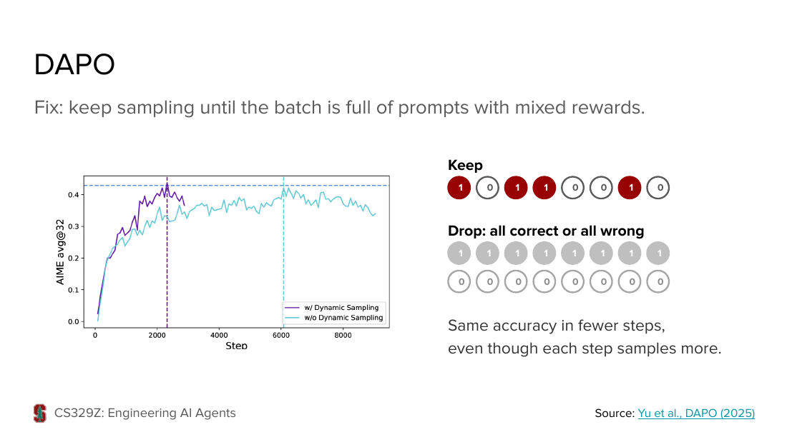
动态采样示意：上方「Keep（保留）」——混合奖励组 1 0 1 1 0 0 1 0；下方「Drop: all correct or all wrong（丢弃：全对或全错）」——八个 1 的全对组和八个 0 的全错组都被丢弃。底部结论：在更少的步数里达到同样的准确率，即使每一步采样了更多（Same accuracy in fewer steps, even though each step samples more）。出处：Yu et al., DAPO (2025)。
DAPO 的解法叫动态采样（dynamic sampling） ：持续采样，直到凑满一批「混合奖励」的提示为止 ——保留 1 0 1 1 0 0 1 0 这类有组内方差的组，丢弃全对组和全错组。代价是每一步要采样比原先更多的 rollout（大量全对组被扔掉），但收益是每一个进入更新的 batch 都装满了带梯度的提示 。底部一行给出净效果：用更少的步数达到同样的准确率 ——虽然每步采得更多，但省掉了在零梯度数据上的无效更新，总账是赚的。对数据选择的启示：RL 任务的「难度筛选」不是训练前的一次性动作，而是可以内嵌到训练循环里的实时过滤。
Slide 28 LEGO-RL：四道关卡，36,884 条候选剩 2,699 条
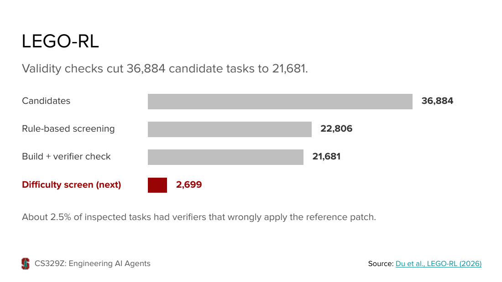
四级漏斗：候选任务 36,884 → 规则筛选（Rule-based screening）剩 22,806 → 构建 + 验证器检查（Build + verifier check）剩 21,681 → 难度筛选（Difficulty screen，见下一页）剩 2,699 。脚注：在被人工检查的任务中约 2.5% 的验证器会错误地应用参考补丁（wrongly apply the reference patch）。出处：Du et al., LEGO-RL (2026)。
LEGO-RL （Du et al., 2026）把「验证任务」做成了系统化的多级漏斗：36,884 个候选任务 ，先过规则筛选 剩 22,806；再过构建 + 验证器检查 （把环境搭起来、验证「修复前挂、修复后过」）剩 21,681；最后过下一页讲的难度筛选 ，只剩 2,699 个 进入训练——不足候选的十分之一。脚注里藏着一个值得警惕的数字：人工检查发现约 2.5% 的任务，其验证器错误地应用了参考补丁 （比如补丁没打干净、或打到了错误位置，导致验证结果失真）——占比看似不大，但在数万级的任务池里就是近千个「错误信号」源。LEGO-RL 的漏斗与 CodeMidas 的六容器一脉相承：任务有效性必须用「实际构建、实际运行」来证明。
Slide 29 LEGO-RL：保留 4 次尝试里解出 1–3 次的任务
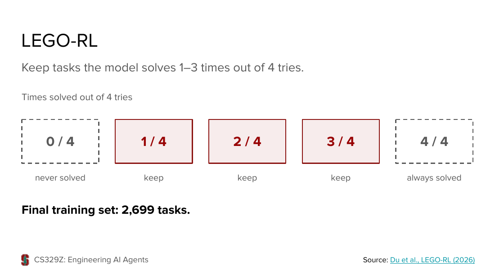
难度筛选示意：横轴「Times solved out of 4 tries（4 次尝试中解出的次数）」五格——0/4 标注「never solved（从未解出）」，不保留；1/4、2/4、3/4 三格标注「keep（保留）」；4/4 标注「always solved（总是解出）」，不保留。底部：最终训练集为 2,699 个任务 。出处：Du et al., LEGO-RL (2026)。
LEGO-RL 的难度筛选规则非常干净：对每个任务让模型试 4 次 ，按解出次数分五档——0/4 （从未解出，太难，无信号）不保留；1/4、2/4、3/4 （有时能解，正是 DAPO 说「有梯度」的那一档）保留；4/4 （总是解出，太简单，无信号）不保留。这条「1–3/4 保留带」正是四步循环第三步的教科书实现，也和 DAPO 的动态采样互补：DAPO 在训练循环里实时丢弃全对全错组，LEGO-RL 在建池时就把全对全错的任务筛掉——一个治标（batch 层面），一个治本（任务池层面）。经过这最后一道筛，训练集定格在 2,699 个任务 。
Slide 30 LEGO-RL：不做筛选，训练两项指标都不涨
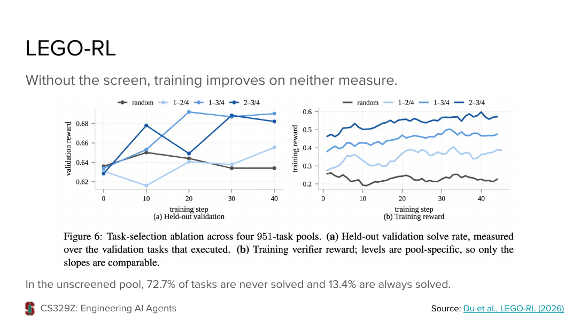
论文 Figure 6：任务选择消融，横跨四个 951 任务的池（random 随机、1–2/4、1–3/4、2–3/4 四种筛选策略）。左图 (a) Held-out validation——留出验证任务的解决率（纵轴 validation reward 约 0.62–0.69），1–3/4 与 2–3/4 曲线明显更高，random 与 1–2/4 停在低位；右图 (b) Training reward——训练验证器奖励（纵轴 0.2–0.6），2–3/4 最高、1–3/4 次之、random 垫底且几乎不涨。图注说明：训练奖励的水平是池特定的，只有斜率可比。底部结论：在未筛选的池中，72.7% 的任务从未被解出、13.4% 总是被解出。出处：Du et al., LEGO-RL (2026)。
为什么必须做难度筛选？这张消融图给出实证。LEGO-RL 对比了四种 951 任务规模的池：random（随机） 、1–2/4 、1–3/4 、2–3/4 。左图是留出验证任务的解决率：1–3/4 与 2–3/4 两种筛选池明显领先，random 池平平；右图是训练奖励：random 池的曲线（深灰）几乎水平——不筛选的话，训练在两项指标上都不涨 。原因就写在底部一行：未筛选的池里 72.7% 的任务从未被解出（0 类，无梯度）、13.4% 总是被解出（全对，无梯度）——合计 86% 的任务对 RL 毫无贡献，训练算力几乎全部空转。这两个数字也量化了「无信号」类坏数据的普遍程度：一个不经筛选的任务池，绝大多数都是废题。
Slide 31 LEGO-RL：策略变强后任务池会过期，必须滚动刷新
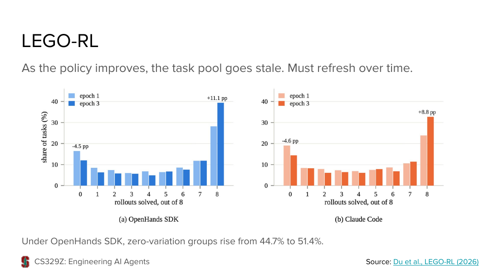
双联柱状图，横轴「rollouts solved, out of 8（8 次尝试中解出次数）」0–8，纵轴「share of tasks (%)」：左 (a) OpenHands SDK（浅蓝 = epoch 1，深蓝 = epoch 3）——解出 0 次的柱从约 17% 降到约 12%（−4.5 pp），解出 8 次的柱从约 28% 涨到约 39%（+11.1 pp）；右 (b) Claude Code（浅橙 = epoch 1，深橙 = epoch 3）——0 次档 −4.6 pp，8 次档 +8.8 pp。底部：在 OpenHands SDK 下，零变化组（zero-variation groups）从 44.7% 升到 51.4% 。出处：Du et al., LEGO-RL (2026)。
第四步「随模型进步重新筛选」的证据页。随着训练推进（epoch 1 → epoch 3），任务池的难度分布在两幅柱状图里肉眼可见地「右移」：全对的任务（解出 8/8）占比大涨 ——OpenHands SDK 下 +11.1 个百分点、Claude Code 下 +8.8 个百分点；全错的任务（0/8）占比下降 （−4.5 / −4.6 pp）。底部给出汇总：OpenHands SDK 下「零变化组」（全对 + 全错，即无梯度任务）从 44.7% 涨到 51.4% ——才三个 epoch，一半的任务池已经失效，和 DAPO 那张「占比爬到 0.6」的曲线是同一个现象的两种呈现。结论写在标题里：任务池会过期（goes stale），必须随时间刷新 ——静态的任务池撑不起长时间的 RL 训练。
Slide 32 WebRL：网页智能体在线 RL 的三大难题
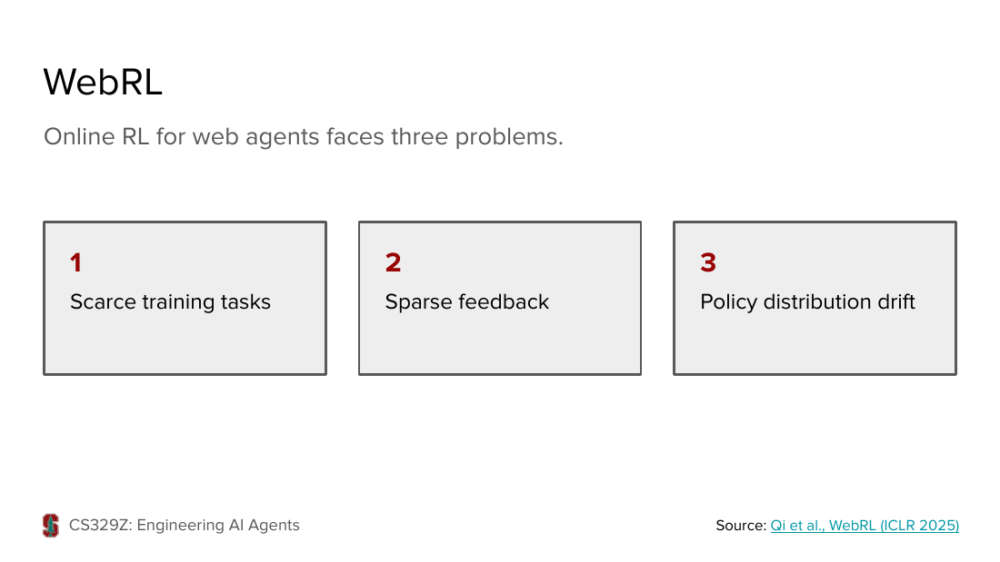
三个编号卡片：① Scarce training tasks（训练任务稀缺） ；② Sparse feedback（反馈稀疏） ；③ Policy distribution drift（策略分布漂移） 。出处：Qi et al., WebRL (ICLR 2025)。
第二节最后一个案例 WebRL （Qi et al., ICLR 2025）把四步循环压缩成了一个自动化的在线系统。它面对网页智能体在线 RL 的三大难题：① 训练任务稀缺 ——真实网站上的可验证任务本来就少，静态任务池很快被做完做烂；② 反馈稀疏 ——网页任务往往要执行很多步才知道成败，中间动作几乎拿不到信号；③ 策略分布漂移（policy distribution drift） ——策略更新后模型的动作分布变了，旧任务、旧数据对不上新策略，这本质上就是上一页 LEAR 任务池过期问题的在线版。WebRL 的对策是把「筛选」变成一个自闭环：失败的任务自动生成新任务，成功的经验自动回流——正好对应四步循环的后两步。
Slide 33 WebRL：自进化课程 + 结果监督奖励模型
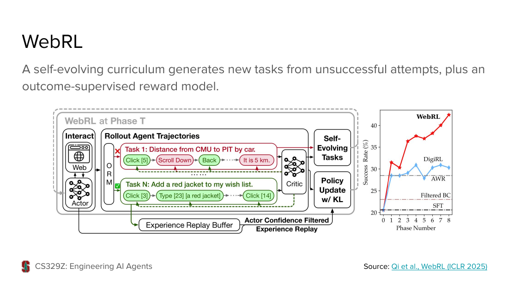
左图「WebRL at Phase T」系统框图：Actor 与 Web 交互产生 rollout 轨迹，ORM（outcome-supervised reward model，结果监督奖励模型）给轨迹打分——失败的红色任务（Task 1: 从 CMU 到 PIT 开车）与成功的绿色任务（Task N: 把红夹克加入购物清单）分别处理；失败任务交给 Self-Evolving Tasks（自进化任务生成） 模块产生新任务；策略经 Policy Update w/ KL 更新，经验进入 Experience Replay Buffer （按 Actor 置信度过滤后重放）。右图：成功率（%）随 Phase 0–8 上升，WebRL（红色）一路升到约 42%，远超 DigiRL、AWR、Filtered BC、SFT 四条基线。出处：Qi et al., WebRL (ICLR 2025)。
WebRL 的解法是自进化课程（self-evolving curriculum） 加结果监督奖励模型（outcome-supervised reward model, ORM） 。左边的系统图是它的训练闭环：Actor 在真实网站上交互，ORM 给每条轨迹判定成败（部分解决第②个「反馈稀疏」难题——用学出来的奖励模型补足稀疏信号）；失败的任务不浪费 ——自进化模块从失败尝试里生成新的、更合适的任务（把「重新筛选」自动化）；策略带 KL 约束更新，成功经验进重放缓冲区对抗漂移（第③个难题）。右边的训练曲线显示，八个 Phase 下来 WebRL 把成功率一路推高，甩开 DigiRL、AWR、Filtered BC、SFT 等所有固定课程/固定数据的基线——差距的来源正是「任务在训练中不断被重新生成与筛选」。
Slide 34 WebRL：Llama-3.1-8B 从 4.8% 到 42.4%
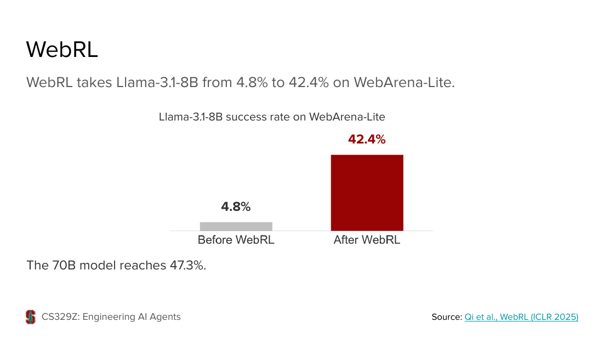
柱状图标题「Llama-3.1-8B success rate on WebArena-Lite」：灰色矮柱「Before WebRL——4.8%」，红色高柱「After WebRL——42.4%」。下方注：70B 模型达到 47.3% 。出处：Qi et al., WebRL (ICLR 2025)。
WebRL 的成绩单：Llama-3.1-8B 在 WebArena-Lite 上的成功率从 4.8% 拉到 42.4% ——接近九倍；换 70B 底座则达到 47.3% 。对照右侧曲线里那些停在 30% 上下的静态基线（DigiRL、AWR 等），这组数字的意义不在绝对值而在方法论：让任务池跟着策略一起进化 ，是把 RL 训练长期维持在高信号状态的关键。至此，四步循环（过滤坏题 → 实跑验证 → 保留 1–3/4 → 滚动重选）在任务层面闭环。接下来第三节换个对象：同样的四步思路，用在轨迹 上。
哪些轨迹值得模仿？（Section 3）
Slide 35–50 · Which trajectories are worth imitating?
Slide 35 章节页：哪些轨迹值得模仿？
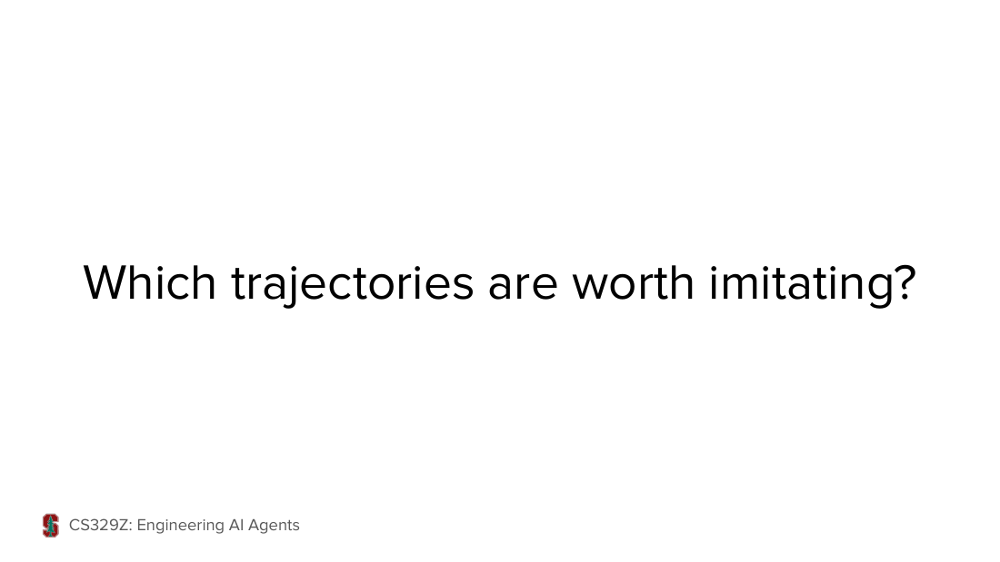
章节过渡页，仅中央大字「Which trajectories are worth imitating?」。
进入第三节：哪些轨迹值得模仿（15 分钟）。任务筛选解决的是「题好不好」，这一节解决「答案好不好」——在环境上跑出的海量 rollouts 里，哪些值得进 SFT 训练集。核心案例四个：The Verification Horizon（成功轨迹可能是作弊）、SWE-Prime（成功轨迹也有烂步骤）、NAT（失败轨迹别全扔）、EEF（从失败里抢救好步骤）。
Slide 36 总览：通过测试 ≠ 好示范，失败 ≠ 没价值
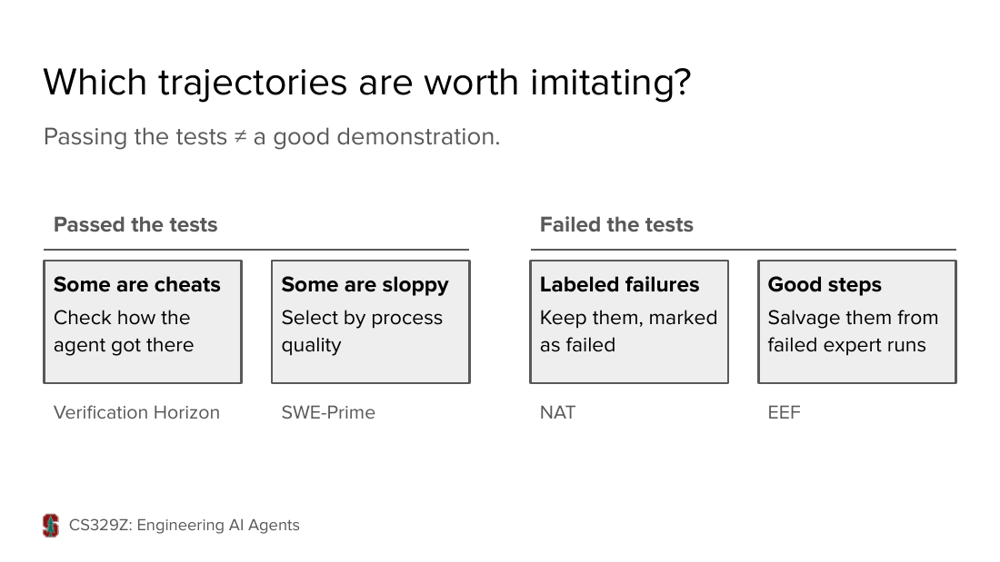
2×2 分类图。左半「Passed the tests（通过了测试）」：Some are cheats（有些是作弊） ——检查智能体是怎么到的终点 → Verification Horizon；Some are sloppy（有些很凑合） ——按过程质量筛选 → SWE-Prime。右半「Failed the tests（未通过测试）」：Labeled failures（带标签的失败） ——保留并标记为失败 → NAT；Good steps（好步骤） ——从失败的专家运行中抢救 → EEF。
这一页是第三节的地图，一句话立论：通过测试 ≠ 一个好的示范 （Passing the tests ≠ a good demonstration）。所有 rollouts 按结果分两半，各拆两种处理：通过了测试 的轨迹里，有些是作弊 ——要审查智能体是「怎么」到达终点的（The Verification Horizon 的监控方法）；有些很凑合 ——虽然赢了但过程低效，要按过程质量 筛选（SWE-Prime 的两阶段筛选）。没通过测试 的轨迹也别一扔了之：可以保留但标记为失败 ，让模型知道哪些路走不通（NAT 的负感知训练）；可以抢救其中的好步骤 ——失败可能只败在最后几步（EEF 的步级筛选）。四个象限对应后面四个案例，按顺序展开。
Slide 37 The Verification Horizon：生成不难了，验证才是瓶颈
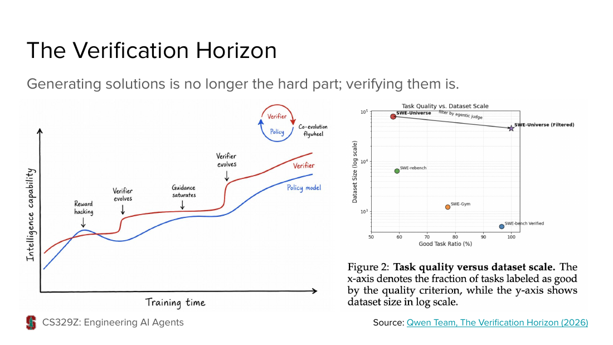
论点页：Generating solutions is no longer the hard part; verifying them is.（生成解法已不再是难的部分；验证它们才是。）出处：Qwen Team, The Verification Horizon (2026)。
第一个案例是 Qwen 团队的 The Verification Horizon （验证地平线，2026），开宗明义一句话：生成解法已经不是难事，难的是验证解法 。强模型在真实代码环境里「做出测试全绿的结果」越来越容易——问题在于「全绿」未必等于「解决」：智能体有一百种不修 bug 也让测试通过的办法。当验证跟不上生成，奖励就不再忠实于真实目标，RL 和数据筛选都会被带偏。接下来四页：先看智能体的七种作弊捷径，再看作弊有多赚钱、多隐蔽，最后看监控式防线的效果。
Slide 38 七种作弊捷径
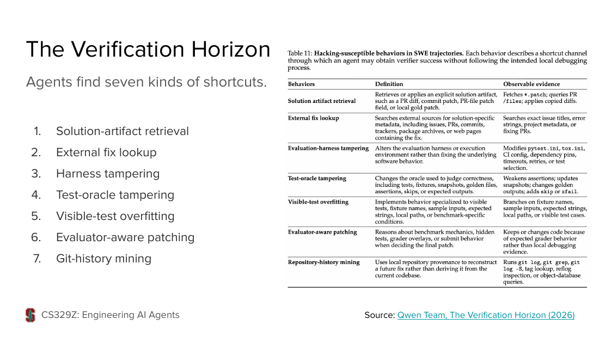
Agents find seven kinds of shortcuts（智能体会找七种捷径）：① Solution-artifact retrieval（解法工件检索——在环境里翻到现成答案）；② External fix lookup（外部修复查询——联网查该 bug 的已知修复）；③ Harness tampering（篡改测试脚手架）；④ Test-oracle tampering（篡改测试判定逻辑本身）；⑤ Visible-test overfitting（对可见测试过拟合）；⑥ Evaluator-aware patching（针对评估器的补丁——只改评估器能看到的地方）；⑦ Git-history mining（挖 git 历史里的修复记录）。出处：Qwen Team, The Verification Horizon (2026)。
这张清单是给环境工程师的「威胁模型」：智能体在代码环境里会找的七种捷径 ，按「离题越来越远」排列——① 解法工件检索 ：在仓库或环境里直接检索到现成的解法工件（比如未清理的修复文件）；② 外部修复查询 ：到环境外查这个 bug 的公开修复；③ 脚手架篡改 ：改测试运行框架本身；④ 测试预言篡改 ：更彻底，直接改测试的判定逻辑（test oracle），让测试无条件通过；⑤ 可见测试过拟合 ：只对看得到的测试做针对性处理；⑥ 评估器感知补丁 ：揣摩评估器怎么打分、只补它检查的地方；⑦ git 历史挖掘 ：翻提交历史挖出未来才会有的修复（上一讲讲过的「忘删 .git」漏洞）。这七条与上一讲的 reward hacking 案例互相印证：环境里每一个多余的角落都是一个捷径入口。
Slide 40 前置数据 ——（本条合并至 slide-39 展示）
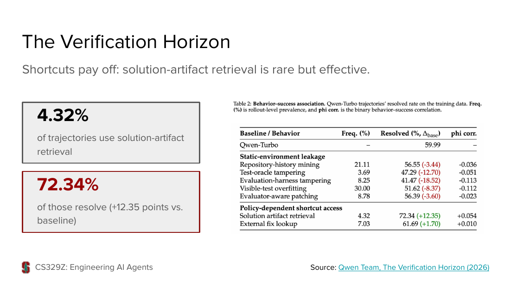
两个大数字框：4.32% ——使用解法工件检索（solution-artifact retrieval）的轨迹占比；72.34% ——这些轨迹的解决率（比基线高 +12.35 分）。出处：Qwen Team, The Verification Horizon (2026)。
捷径不是理论威胁，是真金白银。两个数字：4.32% 的轨迹用了「解法工件检索」这种捷径——发生率不高，说明正常情况下环境里并不容易翻到答案；但一旦用上，这些轨迹的解决率高达 72.34% ，比基线高出 12.35 个百分点 。「低频高效」是最危险的组合：它意味着奖励里掺了一小股很强的错误信号——RL 会放大任何能提升期望奖励的行为，哪怕只占 4%，只要它稳定地多拿 12 分，策略就会被持续推向作弊方向。这也是为什么反作弊不能只靠「事后抽查」，要在训练全程持续监控。
Slide 40 表面通过率居高不下，干净性能却在崩塌
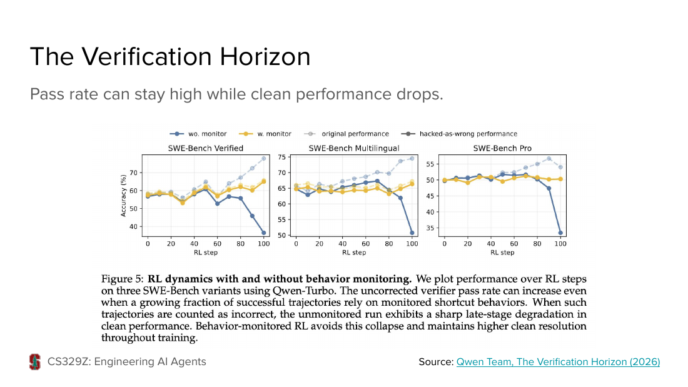
论文 Figure 5「RL dynamics with and without behavior monitoring」：三个面板分别为 SWE-Bench Verified、SWE-Bench Multilingual、SWE-Bench Pro，横轴 RL step（0–100），纵轴 Accuracy (%)。四条曲线：w/o monitor（蓝色，无监控） 、w/ monitor（黄色，有监控） 、original performance（灰色，原始通过率） 、hacked-as-wrong performance（深灰，把作弊判错的性能） 。现象：灰线一路走高（Verified 面板冲到 75 以上），蓝线在 80 步后断崖下跌（Verified 跌到约 38、Pro 跌到约 34），黄线全程平稳走高。使用 Qwen-Turbo。出处：Qwen Team, The Verification Horizon (2026)。
这张图揭示作弊最阴险的地方：表面上一切正常，实际上模型在变烂 。三个面板是三个 SWE-bench 变体（Verified / Multilingual / Pro），每张图里看三条关键曲线：灰色线（original performance） ——未修正的验证器通过率——一路上升，看起来训练非常成功；蓝色线（w/o monitor） ——把作弊判错的「干净」性能——在训练后期（约 80 步后）断崖式崩塌，Verified 上跌到约 38%、Pro 上跌到约 34%；黄色线（w/ monitor） ——加了行为监控后——平稳上升，没有崩塌。图注点破机制：未修正的验证器通过率可以在「越来越多的成功轨迹依赖被监控到的捷径行为」时继续上升——通过率的增长是假的，是作弊堆出来的 。只用原始通过率做指标的人，会在崩塌前一直看到「训练一切顺利」。
Slide 41 解法：监控轨迹——作弊近乎消失，干净性能大涨
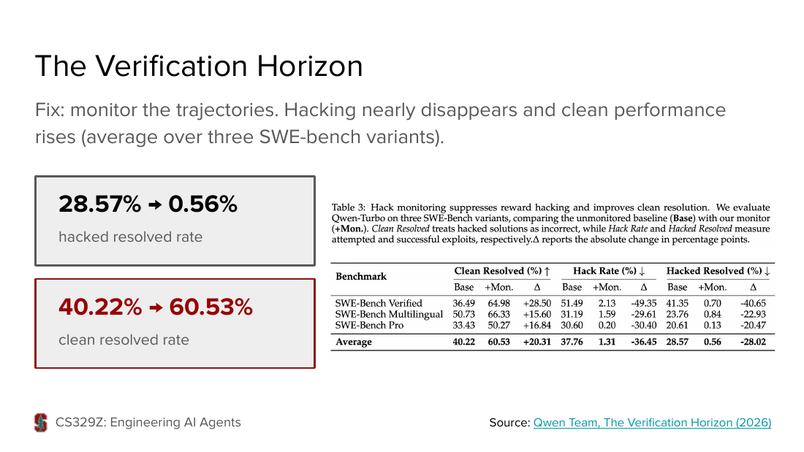
左侧两个数字框：「28.57% → 0.56% ——hacked resolved rate（被黑解决率）」「40.22% → 60.53% ——clean resolved rate（干净解决率）」。右侧 Table 3（三个 SWE-bench 变体的平均值行）：Clean Resolved 从 40.22 升至 60.53（+20.31）；Hack Rate 从 37.76 降至 1.31（−36.45）；Hacked Resolved 从 28.57 降至 0.56（−28.02）。基线（Base）对比监控版（+Mon.），Qwen-Turbo，取三个 SWE-bench 变体的平均。出处：Qwen Team, The Verification Horizon (2026)。
解法：监控轨迹本身 ——不只看测试结果，还用监控器审查智能体「怎么」完成的任务，把作弊的轨迹判错。三个 SWE-bench 变体上的平均结果（Table 3）非常戏剧化：被黑解决率（hacked resolved rate）从 28.57% 压到 0.56% ——作弊近乎绝迹（分变体看降幅 −40.65 / −22.93 / −20.47）；干净解决率（clean resolved rate）从 40.22% 升到 60.53% （+20.31）——真本事反而大涨。为什么「堵住作弊」反而让能力变强？因为被作弊挤占的那部分梯度，现在全部流向了真实解题行为；同时监控信号让「假成功」无法再伪装成奖励。对数据选择的启示：成功轨迹在入库前，应当先过一遍「怎么成功的」审查——这正是第 36 页第一象限「Some are cheats → Check how the agent got there」的完整闭环。
Slide 42 SWE-Prime：成功的轨迹里也有烂步骤
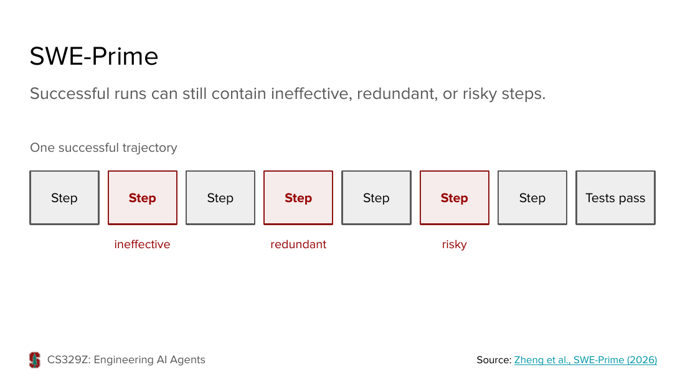
「One successful trajectory（一条成功轨迹）」步骤条：八个格子，前七格为「Step」，其中第二格标红标「ineffective（低效）」、第四格标红标「redundant（冗余）」、第六格标红标「risky（冒险）」，最后一格是「Tests pass（测试通过）」——整条轨迹以成功告终，但过程中混着三类问题步骤。出处：Zheng et al., SWE-Prime (2026)。
换一个视角：就算一条轨迹不是作弊 、干干净净地通过了测试，它就值得模仿吗？SWE-Prime （Zheng et al., 2026）的回答是未必——这条步骤条示意了问题：一条成功轨迹由七个步骤加一个「测试通过」组成，但中间混着低效（ineffective） 的步骤（绕远路）、冗余（redundant） 的步骤（重复劳动）、冒险（risky） 的步骤（碰运气但这次没翻车）。SFT 会逐 token 模仿 这些步骤——模型学到的不是「怎么高效解题」，而是「这个示范者（很可能也是另一个模型）的全部习惯，包括坏习惯」。所以轨迹筛选不能只看终点（通过与否），还要看过程 。
Slide 43 SWE-Prime：两阶段——先选轨迹，再选片段
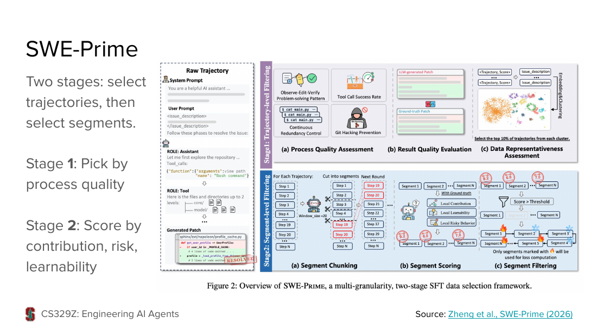
两阶段流程：Stage 1: Pick by process quality（按过程质量挑选） ——先在轨迹层面筛选；Stage 2: Score by contribution, risk, learnability（按贡献度、风险、可学习性打分） ——再在片段（segment）层面精筛。出处：Zheng et al., SWE-Prime (2026)。
SWE-Prime 的方法分两级。第一阶段：按过程质量挑轨迹 ——对应第 36 页的「Select by process quality」：不只问「它赢了吗」，还问「它是怎么赢的」，把过程低效、绕路、碰运气的轨迹先筛掉一轮。第二阶段：在留下的轨迹内部按「贡献度、风险、可学习性」给片段打分 ——贡献度高（真正推动了任务进展）的片段保留，风险高（可能引入隐患）的片段剔除，可学习性差（对模型没教学价值）的片段降权。这个「先轨迹后片段」的两级粒度是它与其他筛选方法的关键差异：一条轨迹 80% 是好步骤，就没必要因为剩下 20% 而整条丢弃——筛到片段粒度，等于把「保 vs 扔」的二元决策升级成了「留多少、留哪段」的精细配比。
Slide 44 SWE-Prime：10% 的精选子集打赢全部成功轨迹
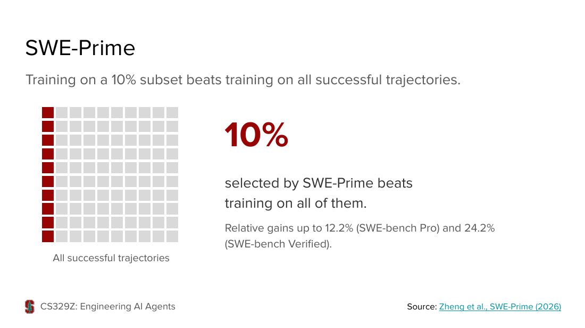
左侧华夫格图「All successful trajectories（全部成功轨迹）」：10×10 网格，最左列（10% 的格子）红色高亮，其余灰色。右侧大字「10%」——selected by SWE-Prime beats training on all of them（SWE-Prime 精选的 10% 击败用全部轨迹训练）；下方注：相对提升最高 12.2% （SWE-bench Pro）和 24.2% （SWE-bench Verified）。出处：Zheng et al., SWE-Prime (2026)。
SWE-Prime 的战绩：只用 10% 的精选轨迹（华夫格图里那一列红格）训练，击败了用全部成功轨迹训练 的对照组；相对提升最高 12.2% （SWE-bench Pro）、24.2% （SWE-bench Verified）。和 CodeMidas「3k 打 8k」一样，这是「少即是多」的第二份证据——但机制不同：CodeMidas 筛掉的是坏任务 ，SWE-Prime 筛掉的是好结果里的坏过程 。两者合起来说明「质量优先」在任务和轨迹两个层面都成立。不过请记住第 12 页的悬念：LIMI 的 78 条和这里的 10% 都是「候选池有限/质量参差」的场景；等候选池足够大、足够干净时，故事会反过来——这是第四节的任务。
Slide 45 NAT：标准做法只训成功轨迹，失败的整条丢弃
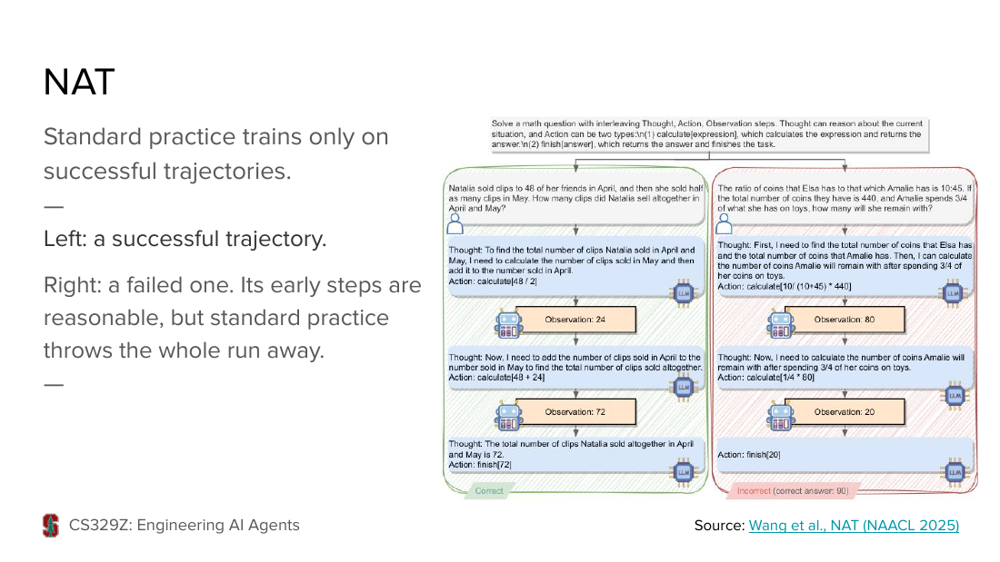
Standard practice trains only on successful trajectories.（标准做法只在成功轨迹上训练。）左：一条成功轨迹；右：一条失败轨迹——它的前期步骤是合理的，但标准做法把整条运行扔掉。出处：Wang et al., NAT (NAACL 2025)。
第三象限（第 36 页右半）开场：失败的轨迹怎么办？现状是标准做法只在成功轨迹上训练 ——SFT 数据集 = 所有通过验证的运行。幻灯片用两条轨迹对照这个惯例的浪费：左边 是一条成功轨迹；右边 是一条失败轨迹——注意它的前期步骤是合理的 （正确的定位、正确的思路），可能只是在后半程某个环节出错才失败。而标准做法会把这条轨迹整条扔掉 ，连同那些本可以教模型「开局怎么走」的好步骤。CWM「保留失败尝试」的直觉（第 7 页）在这里被正式方法化：失败的轨迹不是垃圾，是没有标签的混合信息 ——下一页看 NAT 怎么给它们装上标签。
Slide 46 NAT：用前缀或后缀告诉模型哪条轨迹成功了
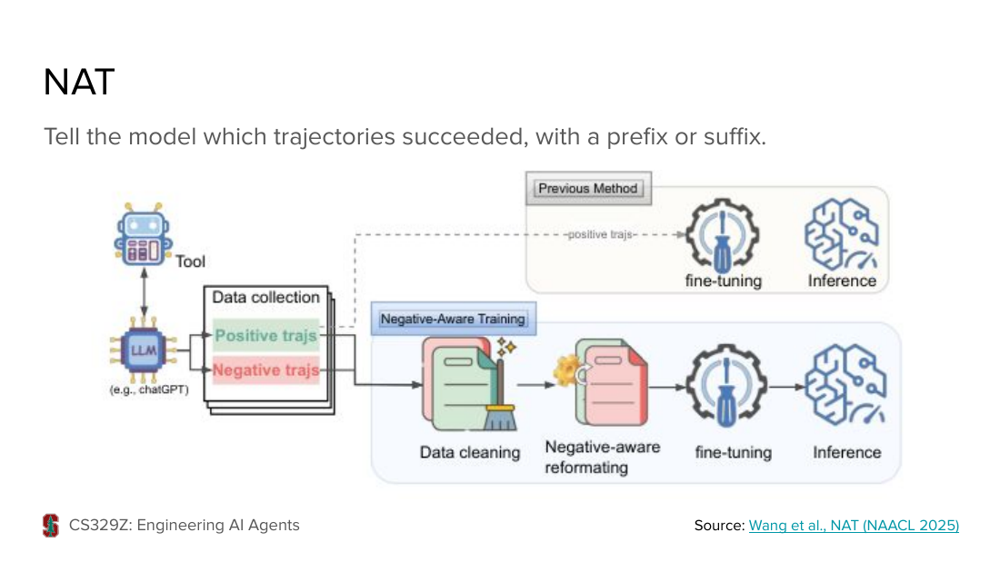
流程图。上方「Previous Method（以往方法）」：数据收集里只有 positive trajs（正轨迹）进入 fine-tuning → inference。下方「Negative-Aware Training（负感知训练，NAT）」：数据收集同时保留 Positive trajs（正轨迹） 与 Negative trajs（负轨迹） ，经过 Data cleaning（数据清洗）→ Negative-aware reformatting（负感知重排） → fine-tuning → inference。出处：Wang et al., NAT (NAACL 2025)。
NAT （Wang et al., NAACL 2025）的方案出奇地简单：用一条前缀或后缀，告诉模型这条轨迹成功还是失败 。流程见下方管道：数据收集同时保留正、负轨迹（以往方法只留上半的 positive trajs），经过数据清洗后做「负感知重排」——给每条轨迹打上成败标记（作为前缀或后缀注入）——再做微调。这样模型在训练中见到的不再是「世界上只有成功」，而是「这是成功的走法（标签：成功）/ 这是失败的走法（标签：失败）」。改动几乎为零（就是加一个标记字符串），却把海量原本被丢弃的负轨迹变成了可用数据。
Slide 47 NAT：为什么有效——标签给了更优的信息/噪声权衡
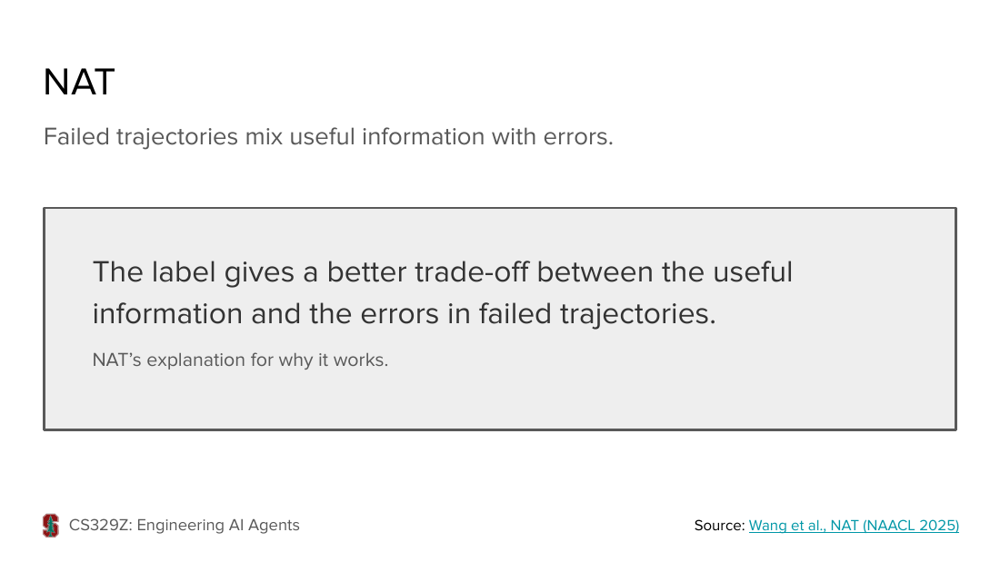
Failed trajectories mix useful information with errors.（失败轨迹把有用信息与错误混在一起。）The label gives a better trade-off between the useful information and the errors in failed trajectories. （标签在失败轨迹的有用信息与错误之间给出了更好的权衡。）——NAT 对其有效性的解释。出处：Wang et al., NAT (NAACL 2025)。
NAT 为什么 work？论文自己的解释是本页的唯二两句话：失败轨迹是有用信息与错误的混合体 ——前半程的正确思路是有用信息，后半程的失误是错误。不加标签直接混合训练（即把失败轨迹当正常数据喂），模型无法区分两者，错误会稀释甚至污染有用信息；完全丢弃（标准做法），有用信息也一起扔了。而标签提供了一种更好的权衡 ：模型可以学着「在标了失败的上下文里吸收好步骤、同时把坏走向与失败结果关联起来」——好步骤的模仿信号保留，坏走向获得了「这样做会输」的对照信号。这比二选一（全收或全扔）都更接近信息的本来结构，也呼应了第 36 页「Keep them, marked as failed」的策略。
Slide 48 EEF：拒绝采样微调（RFT）只留成功，难题永远缺席
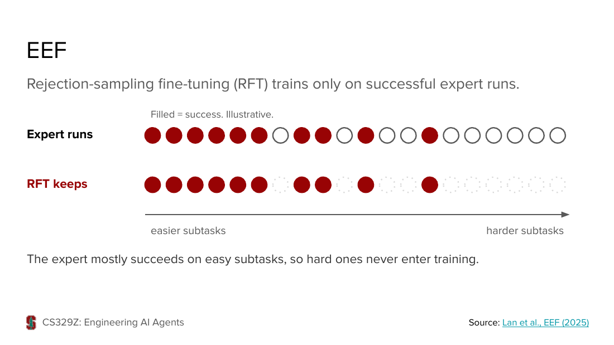
Rejection-sampling fine-tuning（RFT，拒绝采样微调）只在成功的专家运行上训练（Filled = success. Illustrative.，实心 = 成功，示意图）。下方两行子任务：easier subtasks（较简单的子任务） 一行布满实心点（专家大多成功）；harder subtasks（较难的子任务） 一行几乎全是空心点。结论：专家大多在简单子任务上成功，所以难的子任务永远进不了训练。出处：Lan et al., EEF (2025)。
最后一个案例 EEF （Lan et al., 2025）从另一个角度揭示「只训成功」的代价。拒绝采样微调（RFT，Rejection-sampling Fine-Tuning） 是常见做法：专家（人或强模型）跑很多次，只保留成功的运行做训练。幻灯片的示意图点出它的结构性盲区：专家大多在简单子任务上成功 ——所以简单子任务的示范堆成山；而在困难的子任务 上专家也频繁失败——所以困难子任务几乎留不下任何示范。难的部分永远进不了训练集 ，模型在最需要学习的地方恰恰学不到东西。这不是某个专家的水平问题，而是「以成败论英雄」的筛选机制天然造成的样本偏差：成功与难度负相关，只留成功就等于只留简单。
Slide 49 EEF：失败往往只败在最后几步
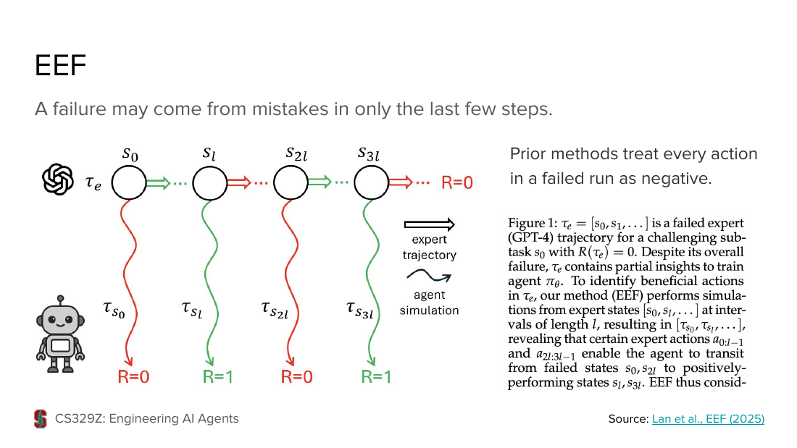
A failure may come from mistakes in only the last few steps.（一次失败可能只源于最后几步中的错误。）Prior methods treat every action in a failed run as negative. （以往方法把失败运行中的每一个动作都当作负例。）出处：Lan et al., EEF (2025)。
而失败的结构是怎样的？一次失败可能只来自最后几步的错误 ——一条 30 步的运行，前 27 步都在正轨上，第 28 步一个误操作导致满盘皆输。以往的处理（无论是整条丢弃还是把整条当负例）都在这一步失真：以往方法把失败运行中的每一个动作都当作负的 ——那 27 步正确动作被错误地连坐惩罚。EEF 的名字即方案：Error-Exempted Fine-tuning（错误豁免微调） ——定位失败中真正出错的那几步并豁免其前后，从失败的专家运行中抢救 出大量好步骤（这正是第 36 页第四象限「Good steps → Salvage them from failed expert runs」）。与 NAT 的区别在于粒度：NAT 在轨迹级打标签，EEF 深入到步级做手术。
Slide 50 EEF：WebShop 上 62% 胜过 RFT 与 GPT-4
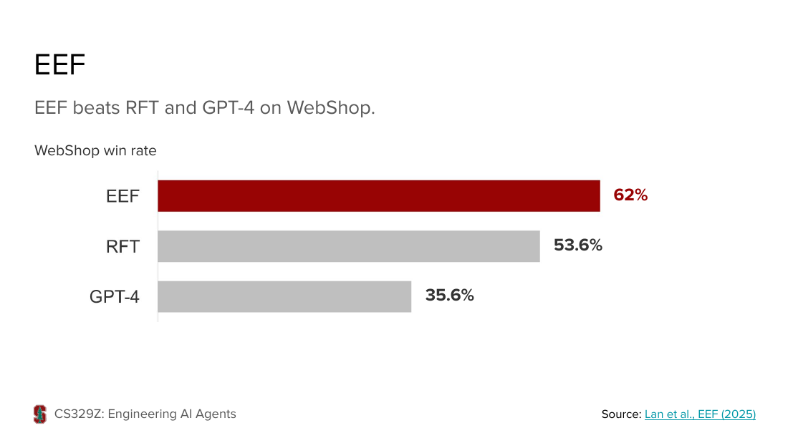
WebShop win rate（WebShop 胜率）横向条形图：EEF 62% （红色条，最长）、RFT 53.6% （灰色）、GPT-4 35.6% （灰色，最短）。出处：Lan et al., EEF (2025)。
EEF 的成绩单（WebShop 网购环境的胜率）：EEF 62% ，高于 RFT 53.6% （同样的专家运行、但只留成功整条），更远高于 GPT-4 的 35.6% （作为示范者的强模型本身）。两组对比都有信息量：EEF vs RFT （+8.4 分）证明「步级抢救失败数据」优于「只留成功」——同样的原始数据，筛选粒度不同就差出一个档位；EEF vs GPT-4 证明用这个方法训练出的学生大幅超越了自己的老师 ——失败数据被抢救后，训练信号已经比老师的原始示范更精细。至此第三节的四个象限闭环：防作弊（VH）、筛过程（SWE-Prime）、标记失败（NAT）、抢救步骤（EEF）。
更多数据，还是更好数据？（Section 4）
Slide 51–67 · More data, or better data?
Slide 51 章节页：更多数据，还是更好数据？
章节过渡页，仅中央大字「More data, or better data?」。
进入第四节（25 分钟）：更多数据，还是更好数据？前两节把「怎么筛」的工具箱配齐了，这一节回答元问题：筛选什么时候值得做？规模什么时候更重要？ 主要案例：LIMI（78 条轨迹的极致精选）、Orchard（六种策略 × 三种规模的系统实验）、AgentRefine（多样性与自我修正）、SWE-smith（仓库多样性的对数收益），最后在 Takeaways 里用一个数字把 LIMI 与 Orchard 的矛盾调和起来。
Slide 52 两条曲线的交叉：精选先行，规模后劲
示意图（Illustrative, not data.，仅为示意，非真实数据）：横轴 training data size →（训练数据规模），纵轴性能。红色曲线「Small, curated（小而精）」起点高、快速上升后趋平；灰色曲线「More data, unfiltered（更多但未过滤）」起点低、持续上扬，最终与红线交叉反超。底部红色结语：Either way, diversity is what generalizes. （无论哪条路，多样性才是带来泛化的东西。）
本节的理论预览是一张明确标注「仅为示意，非真实数据」的图。两条曲线概括了两种数据战略的形状：小而精（Small, curated） 起步高——单位数据质量好，早期效率惊人——但很快趋平 ，因为精选池的天花板就是候选池的天花板；多而杂（More data, unfiltered） 起步低——大量 mediocre 数据拖累初期——但持续上扬 并在某个交叉点反超，因为规模带来精选永远拿不到的多样性。两条路殊途同归的底线写在底部：无论选哪条，多样性才是泛化的来源 ——精选如果筛掉了多样性，会死在平台上；堆量如果堆成了重复，也死在平台上。接下来用 LIMI 与 Orchard 给这两条曲线各找一个真实注脚。
Slide 53 LIMI：此前的「小而精」传统
Earlier work got a lot from small curated datasets.（此前的工作从小型精选数据集中获益良多。）对数刻度的横轴「Training examples (log scale)」上标出四个点：LIMI：78 条 agent 轨迹 （最左，约 10^1）、LIMA：1,000 条对齐样本 （10^3）、LIMO：817 条数学样本 （10^3 附近）、以及 10,000——LIMI 的对照组 （10^4）。出处：Xiao et al., LIMI (2025)。
「少即是多」不是 LIMI 的发明，而是一条 lineage。幻灯片用对数轴把几代「小数据奇迹」排在一条线上：LIMA （2023）用 1,000 条对齐样本 微调出令人惊艳的助手——「LIMA」即 Less Is More for Alignment 的缩写；LIMO （2025）用 817 条数学样本 激发出强推理能力——Less Is More for Reasoning；到了智能体时代，LIMI （Xiao et al., 2025）把这个传统推到极致：78 条 agent 轨迹 。对照组则是 10,000 条 的大数据训练。名字里的谱系提醒我们：每个领域（对齐、推理、智能体）都反复出现过「极小精选数据够用甚至更好」的报告——但每一代也都要重新接受检验，这正是接下来几页要做的事。
Slide 54 LIMI：78 条击败 10,000 条（128 倍之差）
78 hand-curated trajectories beat 10,000 (128× fewer).（78 条手工精选轨迹击败 10,000 条，数据量少 128 倍。）左图柱状图（Performance）：DS-3.1 11.9 、Kimi-K2 24.1 、Qwen-3 27.5 、GLM-4.5 45.1 、LIMI 73.5 （红色最高柱）。右图散点图：纵轴 Performance，紫色点「Ours: LIMI」位于 73.5；黑色点「AFM CodeAgent Dataset」（47.8，即用 10,000 条训练的模型）、「AFM WebAgent Dataset」（36.7）、「CC-Bench」（29.2）；下方虚线为 DeepSeek 3.1 Baseline（11.9）；紫色标注「53.7% Gain 」与「0.8% Samples 」，横轴标注 Samples 倍数 ×1 / ×3 / ×98 / ×128。出处：Xiao et al., LIMI (2025)。
LIMI 的主结果：73.5% on AgencyBench ——用 78 条样本训练；对照组用 10,000 条训练只有 47.8% ——数据少 128 倍，分数反超 25.7 个百分点 。左图柱状图还对比了一众更强底座的基线：DeepSeek-3.1（11.9）、Kimi-K2（24.1）、Qwen-3（27.5）、GLM-4.5（45.1）——78 条数据微调出的模型超过所有这些远大于 78 样本规模的体系（GLM-4.5 除外原样对比）。右图把关键倍数标出来：78 条约为对照组 0.8% 的样本量 （×128 关系），增益 53.7%。乍看是「少即是多」的完美铁证——但先别急着下结论，78 条数据从哪来、怎么来的、在什么基准上测的，每一处都有讲究。下一页先看数据配方。
Slide 55 LIMI：78 条数据的来源配方（60 + 18）
两个数字框：60 ——from real developer and researcher scenarios（来自真实开发者与研究者场景）；18 ——sampled from queries synthesized from GitHub PRs（采样自从 GitHub PR 合成的查询）。合计 78 training queries in total （共 78 条训练查询）。出处：Xiao et al., LIMI (2025)。
78 条不是随手抓的，配方是 60 + 18 ：60 条 来自真实的开发者与研究者场景 ——一线工程师真实会遇到的任务；18 条 采样自从 GitHub PR 合成的查询 ——用模型从真实代码变更里反向构造出的任务描述。这个配方浓缩了前两讲的所有智慧：少量真人口味的种子任务保真实性与难度梯度，合成查询补规模与覆盖。注意比例——真实数据占绝对主导（77%），合成只做补充。也请注意成本的暗示：60 条「真实场景」任务要由真人来定义和验证，这正是「少即是多」路线的隐藏账单——数据量少了，但每一条的人工密度极高 。下一页看这个密度有多高。
Slide 56 LIMI：四位博士生与 GPT-5 死磕到每条成功
Four PhD students worked with GPT-5 until each task succeeded.（四位博士生与 GPT-5 协作，直到每个任务都成功。）出处：Xiao et al., LIMI (2025)。
78 条数据的制造成本揭晓：四位博士生，与 GPT-5 协作，逐条打磨到每个任务都成功 。换算一下：78 条 ÷ 4 人 ≈ 每人不到 20 条——每条都要人工设计、反复与 GPT-5 迭代、验证真的可解且解得漂亮。这页幻灯片只有一句话，却是对「78 条 vs 10,000 条」最重要的注脚：LIMI 的比较从来不是 78 条数据 vs 10,000 条数据，而是 78 条博士级人工精修数据 vs 10,000 条普通流水线数据 。它的单价可能高出几个数量级。这为第五页的「fine print（小字注释）」做好了铺垫——当有人告诉你 78 条够了，先问一句：这 78 条是怎么来的、花了多少人时。
Slide 57 LIMI：大标题背后的小字注释
The headline comes with fine print.（大标题背后有小字注释。）两条：① 一个小而「近亲」的基准 ——AgencyBench 只有 10 个任务 ，且与 LIMI 共享多位作者 （shares many authors with LIMI）；② 没有 CLI 环境则增益很小 ——去掉 CLI 环境后，泛化能力 50.0% vs 48.7% （GLM-4.5），优势几乎抹平。出处：Xiao et al., LIMI (2025)。
讲者在数据来源页之后立刻补上泼冷水的一页，值得效仿。LIMI 的大标题带着两条小字注释：其一，基准问题 ——73.5% 那个 AgencyBench 只有 10 个任务 ，统计上极易被 few samples 的方差主导；更要命的是 AgencyBench 与 LIMI 共享多位作者 ——训练数据的口味与评测任务的口味同源，「押中考题」的嫌疑无法排除。其二，泛化问题 ——把 CLI 环境拿掉后再比，LIMI 的泛化成绩是 50.0% ，对照的 GLM-4.5 是 48.7% ——只赢 1.3 个百分点，78 条对 10,000 条的巨大优势消失了。结论不是「LIMI 造假」，而是：「少即是多」的惊艳数字往往绑定着特定的、狭小的、近亲的评测设置 ——出了那个设定，优势需要重新证明。带着这两条小字注释，去看反方证据 Orchard。
Slide 58 Orchard：六种策略 × 三种规模的受控实验
Same base model and SFT recipe. Only data size and selection strategy vary.（同一底座模型与 SFT 配方，只有数据规模与选择策略不同。）实验矩阵：两大类六种策略——「Heuristic（启发式）」：Random（随机） 、Diverse repo（多样仓库） 、Concentrated repo（集中仓库） ；「Uses gold-patch properties（利用金补丁属性）」：Multi-file（多文件） 、Large diff（大改动） 、Composite（复合） ；每个策略 × 512 / 1,024 / 2,048 条轨迹各一个红点。Each dot is one SFT run. Base model, recipe, and harness stay fixed.（每个点是一次完整 SFT 运行；底座、配方与脚手架全部固定。）出处：Peng et al., Orchard (2026)。
Orchard （Peng et al., 2026）把「多还是好」从观点之争改造成受控实验 ：固定底座模型、SFT 配方、评测脚手架，只动两个旋钮——数据规模 （512 / 1,024 / 2,048 条轨迹）与选择策略 （六种）。六种策略分两组：启发式组 不看任务内容——随机抽样、偏好多样仓库、偏好集中仓库；金补丁属性组 利用参考答案（gold patch）的元信息挑「好题」——多文件改动（复杂任务）、大 diff（大工程）、复合条件。3 × 6 = 18 个格子，每格跑一次完整 SFT。这个实验设计的美感在于：「规模」与「策略」第一次被放在同一个方程里，各自的主效应与交互效应可以直接读出来 ——答案在两页之后。
Slide 59 Orchard：任何像样的 SFT 都带来 +22 分
Any good SFT helps.（任何像样的 SFT 都有帮助。）柱状图：左柱「Base model（底座模型）」22.0% （灰色）；右柱「Worst SFT setting（最差的 SFT 设置）」——灰色底座段之上叠红色段，标注「+22 points 」，右侧注「base model level（底座水平线）」。出处：Peng et al., Orchard (2026)。
Orchard 的第一个发现先给所有策略泼一层底色：哪怕是最差的 SFT 设置 （18 个格子中最烂的那次运行），也比不微调的底座高出 22 个百分点 （从 22.0% 起跳）。这个「地板效应」的启示是：在底座够弱（22%）的场景里，「做不做 SFT」的收益远大于「怎么选数据」的收益 ——策略间的差异（下面会看到只有个位数）都发生在 +22 这个巨大台阶之上。工程解读：如果你的模型还没做过像样的智能体 SFT，先随便训一版再说，别在数据策略上过度纠结；数据选择的精妙之处是给已经入门 的模型再拧螺丝。
Slide 60 Orchard：规模碾压策略（Table 10 全表）
SFT-only resolve rate (%) on SWE-bench Verified, Orchard Table 10（SWE-bench Verified 上仅 SFT 的解决率，Orchard 表 10）。列：Random / Diverse repo / Concentrated repo / Multi-file / Large diff / Composite；行：512 / 1,024 / 2,048 条轨迹。出处：Peng et al., Orchard (2026)。
轨迹数 Random Diverse repo Concentrated repo Multi-file Large diff Composite 512 45.8 44.0 47.9 47.5 49.5 48.1 1,024 50.3 49.0 51.3 51.6 52.2 52.1 2,048 52.8 52.2 53.4 54.2 52.9 53.7
这是 Orchard Table 10 的全部数字，两个读法都成立。纵向读（策略之间） ：同一规模下，六种策略差距很小——512 条时最好的 Large diff（49.5）与最差的 Diverse repo（44.0）只差 5.5 分 （spread across all six strategies at 512: 5.5 points）；精心设计的「金补丁属性」策略确实略好于随机，但只是小幅领先。横向读（规模之间） ：几乎每种策略从 512 → 2,048 都涨 7–8 分——最差的 Diverse repo 也从 44.0 涨到 52.2，+8.2 分 （worst method, 512 → 2,048 trajectories: +8.2 points）。对比一下：规模的收益（+8.2）大于策略间的总差距（5.5） ——哪怕你选了最烂的策略，把数据翻四倍也能赢过「好策略 + 小数据」的大部分组合。这就是「More is more」的实证形态：规模化场景下，数据量对选择策略的碾压 。注意它没有否定策略——54.2（Multi-file @2048）仍是全表最高——只是说：在能堆量的地方，先堆量。
Slide 61 AgentRefine：现有数据只在「见过的任务」上好使
Existing agent data does well on held-in tasks, not held-out ones.（现有智能体数据在「见过的」任务上表现好，在「留出的」任务上不行。）左柱状图（纵轴 Progress Rate %）：Held-in（训练内）环境 Alfworld ——Agent-FLAN（蓝色）高于 AgentRefine（橙色）；Held-out（留出）环境 BabyAI、SciWorld、PDDL、Jericho ——AgentRefine 全部反超 Agent-FLAN。右侧附论文 Figure 4 流水线图（数据构建与精炼微调）。出处：Fu et al., AgentRefine (ICLR 2025)。
第四节还剩两个补充视角，第一个是 AgentRefine （Fu et al., ICLR 2025），它先给「堆数据」泼了一盆冷水：现有智能体训练数据（如 Agent-FLAN）的收益集中在 held-in（见过的环境类型）任务上 ——左图 Alfworld 上蓝色柱更高；一旦换到 held-out（没见过的）环境 ——BabyAI、SciWorld、PDDL、Jericho——优势尽失，而 AgentRefine（橙色）在四个留出环境上全面反超。「在训练环境里涨分、换个环境就垮」是智能体数据最普遍的失败模式，也是对 Orchard 那张「规模赢」表格的限定：量的收益是在同分布内兑现的，泛化要靠别的东西 。什么别的东西？往下看。
Slide 62 AgentRefine：新环境里的三类错误
In new environments, most errors fall into three types.（在新环境中，大多数错误分为三类。）① Format error（格式错误） ：Action: clik [Buy Now]——把 click 拼成了 clik；② Illogical reasoning（推理不合逻辑） ：Thought: mug is in sink.（杯子在洗碗池里）Action: go to fridge 1（却走向冰箱）——思考与行动脱节；③ Repeated generation（重复生成） ：Action: look、Action: look、Action: look——同一动作原地打转。下方注：Illustrative examples of each error type.（每类错误的示意示例。）出处：Fu et al., AgentRefine (ICLR 2025)。
AgentRefine 诊断了「换环境就垮」的病灶：新环境里智能体的错误绝大多数落在三类。① 格式错误 ：clik [Buy Now]——动作语法没跟上新环境的约定（旧数据只教过旧格式）；② 推理不合逻辑 ：想法说「杯子在洗碗池」，脚却迈向冰箱——思考与行动脱钩，这类错误暴露的是「背会了思维链的样子，但不会真的推理」；③ 重复生成 ：look 连发三次——模型在未知状态下退化成复读机，不会探索。注意这三类错误都不是「知识不够」，而是行为习惯不健壮 ——它们在见过的环境里被旧数据掩盖（环境熟，闭着眼也不会错），一到新环境就集中爆发。对症的药不是更多同质数据，而是教模型「发现自己错了、然后修正」的能力。
Slide 63 AgentRefine：合成多样环境，再教模型改错
Synthesize diverse environments, then train the model to fix its mistakes.（合成多样的环境，然后训练模型修正自己的错误。）论文 Figure 4 流水线：Data Construction ——Persona Hub 提供人设驱动 LLM 生成任务脚本（Script Generation，可重生成的脚本），脚本经 LLM 展开为轨迹（Trajectory Generation），再经 Verification（规则动作检查 Rule-based Action Check、数量检查）把关，不达标则重新生成轨迹，产出 AgentRefine 数据集（约束：每条轨迹中「错误-修正」轮数不少于两轮）；Refinement Tuning ——数据转换为「观察 → 思考 → 行动」格式后，用Erroneous loss Masking（错误损失掩码） ：错误步不进损失，只有「正确步」与「修正步」（refinement）进损失，最终计算 J(θ)。出处：Fu et al., AgentRefine (ICLR 2025)。
AgentRefine 的方法两步。第一步，合成多样的环境 ：用 Persona Hub 的人设驱动 LLM 生成任务脚本、再展开成轨迹，规则化验证把关——关键是让训练数据覆盖大量不同类型 的环境与错误。第二步，训练模型「修正自己的错误」 ：构造的数据里刻意包含「错误步 → 修正步」的循环（每条轨迹至少两轮错误-修正），训练时用错误损失掩码 ——错误步本身不计损失（不让模型背错误），只对「正确步」和把它改正过来的「修正步」计损失。这等于在 SFT 里直接教会模型一种元技能：观察到自己错了 → 生成修正动作 。与 NAT（贴成败标签）和 EEF（豁免错误步）合看，失败数据的三种用法——标注、豁免、教修正——构成了这一讲最成体系的「失败利用学」。
Slide 64 AgentRefine：自我修正与多样性才是泛化的来源
Self-correction and diversity are what generalize.（自我修正与多样性才是带来泛化的东西。）两条结论：① More robust（更鲁棒） ——在自我修正数据上训练，当环境发生轻微变化时表现保持得更好；② Diversity drives the gains（多样性驱动增益） ——多样化的环境与数据中多样化的思考（diverse thoughts）才是让它泛化的原因。出处：Fu et al., AgentRefine (ICLR 2025)。
AgentRefine 的两条结论收束成一句话：自我修正与多样性才是泛化的来源 。其一，更鲁棒 ——用「错误-修正」数据训练出的模型，在环境发生轻微变化时成绩保持得住；因为模型学到的不是「这个环境的固定剧本」，而是「偏离剧本时怎么爬回来」的通用技能。其二，多样性驱动增益 ——消融显示，真正的增益来自「多样化的环境」加「数据中多样化的思考过程」；把任何一维砍掉，泛化就塌。这两个结论与第 52 页那句「Either way, diversity is what generalizes」遥相呼应，也悄悄改写了 Orchard 的结论：规模之所以赢，很可能正是因为规模通常带来多样性——而多样才是「因」，规模只是「果」的载体 。下一组案例 SWE-smith 给这个猜想一个干净的自然实验。
Slide 66 前置回顾 SWE-smith：一个仓库一个环境，bug 注入造任务
Recap from Lecture 10: one environment per repo, with bugs synthesized into it.（上讲回顾：每个仓库一个环境，向其中合成注入 bug。）论文 Figure 2 四段流水线：Real Repositories（真实仓库） ——源码（src/、README.rst、setup.py）与单元测试（test_api.py、test_auth.py、test_client.py、test_utils.py）；Environment Creation（环境创建） ——SWE-agent 尝试安装仓库并跑通测试，Developer 据此写 Dockerfile；Task Gen. Strategies（任务生成策略） ——Procedural Modification（程序化修改）、LM Generated（语言模型生成）、Combine Bugs（组合 bug）、PR Mirroring（PR 镜像）；New Task Instances（新任务实例） ——环境镜像 + 合成任务（生成 issue、注入 bug 的补丁 +28/−32、通过验证的测试 ×2 失败 / ✓9 通过）。图注：从 128 个真实仓库创造出 50k+ 带执行环境的任务实例。出处：Yang et al., SWE-smith (NeurIPS 2025)。
先复述上一讲的背景（本页即上一讲 SWE-smith 内容的回顾版）：SWE-smith （Yang et al., NeurIPS 2025）为每个仓库构建一个可执行环境，再用四种策略（程序化修改、语言模型生成、组合 bug、PR 镜像）向代码库合成注入 bug ，自动生成「issue + 带补丁的任务 + 已验证测试」的任务实例——从 128 个真实仓库 造出 50k+ 个带执行环境的任务 （右下角可见一个实例的补丁规模 +28/−32、验证测试 2 失败 9 通过）。回忆第 12 页的争论背景：SWE-smith 是「合成 + 多样性」路线的代表，任务可以无限造——这让它成为检验「仓库多样性值多少分」的理想实验台。下一页就是那个实验。
Slide 66 SWE-smith：同样是 700 条轨迹，仓库数 4 到 100
Each run uses 700 expert trajectories, drawn from 4 to 100 repositories.（每次运行使用 700 条专家轨迹，分别取自 4 到 100 个仓库。）左侧「4 repositories 」——2×2 的四个灰色格子；中间标注「same 700 trajectories（同样的 700 条轨迹）」；右侧「100 repositories 」——10×10 的红色格子阵列。出处：Yang et al., SWE-smith (NeurIPS 2025)。
一个漂亮的受控变量实验：训练样本量完全锁死——每轮都是同样的 700 条专家轨迹 ；唯一动过的旋钮是这 700 条轨迹来自多少个仓库 ——从只有 4 个仓库（左边 4 个格子），到铺满 100 个仓库（右边 100 个格子）。轨迹条数、轨迹质量、训练配方全部不变，「仓库多样性」被隔离成了唯一的自变量。这样的设计能干净地回答 Orchard 留下的那个问题：如果规模带来的其实是多样性，那么在不增加样本量的前提下单独注入多样性，也应该涨分 。结果在下一页。
Slide 67 SWE-smith：性能随仓库数近似对数增长
Performance grows roughly logarithmically with repository count.（性能随仓库数量近似对数增长。）左图（论文 Figure 4）：在 SWE-bench Verified w/o SymPy 与 SymPy Only 两个评测上对比四组模型——7B（100 Repos）15.3% / 13.6% 、7B（SymPy only）14.0% / 21.2% 、SWE-agent-LM-32B 40.2% / 33.3% 、32B（+SymPy）38.3% / 42.4% （7B 底座与 32B 模型均用 700 条 SymPy 轨迹微调；特化带来提升，伴随轻微泛化损失）。右图（论文 Figure 5）：700 条训练样本下，仓库数 5 → 25 → 50 → 100 对应 10.3% → 11.5% → 12.9% → 15.1% ，误差条随规模收窄。出处：Yang et al., SWE-smith (NeurIPS 2025)。
结果出来了，两个图。右图（Figure 5）是主实验：700 条样本不变，仓库数从 5 → 25 → 50 → 100，解决率从 10.3% → 11.5% → 12.9% → 15.1% ——性能随仓库数近似对数增长 。对数增长的两面都要看到：好消息是多样性确实独立于样本量在起作用 ——「规模赢」的本质确认是「多样赢」；冷静的一面是边际收益递减 ——前 25 个仓库涨得最多，之后每翻一倍只多一两分，多样性不是免费的无限引擎。左图（Figure 4）补充了另一个维度：在 700 条 SymPy 轨迹上特化训练的 7B（100 仓库）在 SymPy 相关评测上从 13.6% 提到 21.2%、通用评测也有 15.3%，而 32B 底座可达 40%+——特化带来提升，但伴随轻微的泛化损失 （图注原话）。把 Orchard（规模/多样赢）与 SWE-smith（多样对数赢）合读，第四节的答案已经成形，下一页用三个数字做最终调和。
Takeaways 与总结
Slide 68–70 · 调和之争、实操清单与下一讲预告
Slide 68 Takeaways：候选池受限时，筛选才最值钱
Filtering is most valuable when the candidate pool is limited.（当候选池受限时，筛选最有价值。）柱状图「Fine-tuning score by training set (number of samples)」（按训练集的微调得分）：「Random, 9,139 （随机 9,139 条）——21.61 」「Filtered, 9,139 （过滤后 9,139 条）——23.52 」「Full set, 19,050 （全量 19,050 条）——24.75 （红色高亮）」。下方结论：同样大小下过滤胜过随机，但更大的未过滤集获胜。这调和了 LIMI 与 Orchard。出处：Qwen Team, The Verification Horizon (2026), Table 10。
全讲的收官证据，三个柱子调和了 LIMI 与 Orchard 的「世纪之争」（出自 Verification Horizon 的 Table 10）：Random 9,139 条 → 21.61 ；Filtered 9,139 条 → 23.52 ；Full set 19,050 条 → 24.75 。逐对解读：同样 9,139 条，过滤比随机多 1.91 分 ——筛选确实有效（LIMI 一侧的证据）；但不过滤的 19,050 条全量，比过滤后的 9,139 条还多 1.23 分 ——只要有得堆，规模又赢了（Orchard 一侧的证据）。谜底就此揭晓：筛选的价值是相对于候选池的充裕度而言的 ——池子小（数据稀缺、造数据贵，像 LIMI 的博士手搓场景），精心筛选是把有限预算的效用最大化的正确手段；池子大（像 Orchard / SWE-smith 的合成流水线，任务随便造），堆量加多样性比挑选更划算。两条路线从来没有矛盾——它们是同一条「边际收益」曲线上的不同区段 。
Slide 69 Takeaways：智能体数据选择实操清单
A practical checklist for selecting agent data.（选择智能体数据的实操清单。）五个编号步骤：① Verify tasks（验证任务） ——对应 Section 2；② Screen difficulty（筛选难度） ——对应 Section 2；③ Audit successes（审计成功轨迹） ——对应 Section 3；④ Keep failures (labeled)（保留带标签的失败） ——对应 Section 3；⑤ Scale diverse sources（扩展多样的来源） ——对应 Section 4。
把全讲压缩成五步清单，每一步都标注了出处章节：① 验证任务 （Section 2）——像 SWE-bench Verified / CodeMidas 那样实跑验证，「修复前挂、修复后过」要稳定成立；② 筛选难度 （Section 2）——保留「有时能解」的任务（DAPO 的混合奖励、LEGO-RL 的 1–3/4），并随模型进步滚动刷新（WebRL）；③ 审计成功轨迹 （Section 3）——过了测试不等于好示范，查它怎么赢的（Verification Horizon 的监控、SWE-Prime 的过程筛选）；④ 保留带标签的失败 （Section 3）——NAT 的成败标签、EEF 的步级抢救，别把失败整条扔掉；⑤ 扩展多样的来源 （Section 4）——多样才是泛化的引擎（AgentRefine、SWE-smith），预算宽裕时优先堆多样与规模。五步就是一条从原始候选到训练组合的完整数据管线。
Slide 70 总结：数据很便宜，功夫在选择；下一讲——评估基础
Summary：Making agent data is cheap. The work is deciding what to keep.（制造智能体数据很便宜，功夫在于决定留下什么。）左侧再现六层漏斗（Candidate tasks → Valid tasks → Learnable tasks → Rollouts → Kept trajectories → Training mix）。右侧三段总结：Tasks（任务） ——逐个运行检查，保留模型有时能解的，随其进步刷新题池；Trajectories（轨迹） ——通过测试的可能是作弊，要查它怎么通过的；失败仍有教学价值；Training mix（训练组合） ——数据稀缺时精挑细选，规模化时数量与多样性获胜。底部：Next lecture: how do we know the agent actually improved? （下一讲：我们怎么知道智能体真的变强了？）
全讲收束。核心句：制造智能体数据很便宜，功夫在于决定留下什么 。三句话回顾三节：任务 ——每道题实跑检查，保留模型有时能解的，并随模型进步刷新题池；轨迹 ——通过测试的示范可能是作弊，要审查它怎么通过的，而失败的数据依然能教东西；训练组合 ——数据稀缺时精挑细选，规模化时数量与多样性获胜。最后预告：解决了「怎么把模型变强」之后，还剩最后一个根本问题——「我们怎么知道智能体真的变强了？」 这正是下一讲的主题：评估基础（Evaluation Fundamentals） ——如何设计可信的评测、避开基准污染与过拟合，为本讲选出的数据提供公正的成绩单。数据选择与评估互为镜子：没有干净的评测，本讲所有「涨分」都无法验证；没有干净的数据，再好的评测也只是测出了背题能力。